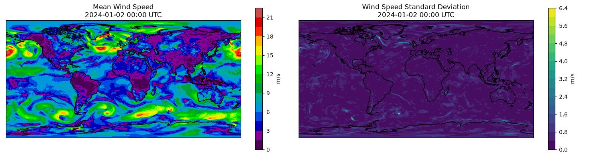

Huge Ensembles (HENS) Checkpoints¶
Basic multi-checkpoint Huge Ensembles (HENS) inference workflow.
This example provides a basic example to load the Huge Ensemble checkpoints to perform ensemble inference. This notebook aims to demonstrate the foundations of running a multi-checkpoint workflow from Earth2Studio components. For more details about HENS, see:
Warning
We encourage users to familiarize themselves with the license restrictions of this model's checkpoints.
For the complete HENS workflow, we encourage users to have a look at the HENS recipe which provides a end-to-end solution to leverage HENS for downstream analysis such as tropical cyclone tracking:
In this example you will learn:
- How to load the HENS checkpoints with a custom model package
- How to load the HENS perturbation method
- How to create a simple ensemble inference loop
- How to visualize results
Set Up¶
First, import the necessary modules and set up our environment and load the required modules. HENS has checkpoints conveniently stored on HuggingFace that we will use. Rather than loading the default checkpoint from the original SFNO paper, create a model package that points to the specific HENS checkpoint we want to use instead.
This example also needs the following:
- Prognostic Base Model: Use SFNO model architecture
earth2studio.models.px.SFNO. - Datasource: Pull data from the GFS data api
earth2studio.data.GFS. - Perturbation Method: HENS uses a novel perturbation method
earth2studio.perturbation.HemisphericCentredBredVector. - Seeding Perturbation Method: Perturbation method to seed the Bred Vector
earth2studio.perturbation.CorrelatedSphericalGaussian.
import os
os.makedirs("outputs", exist_ok=True)
from dotenv import load_dotenv
load_dotenv() # TODO: make common example prep function
from earth2studio.data import GFS
from earth2studio.io import ZarrBackend
from earth2studio.models.auto import Package
from earth2studio.models.px import SFNO
from earth2studio.perturbation import (
CorrelatedSphericalGaussian,
HemisphericCentredBredVector,
)
from earth2studio.run import ensemble
# Set up two model packages for each checkpoint
# Note the modification of the cache location to avoid overwriting
model_package_1 = Package(
"hf://datasets/maheshankur10/hens/earth2mip_prod_registry/sfno_linear_74chq_sc2_layers8_edim620_wstgl2-epoch70_seed102",
cache_options={
"cache_storage": Package.default_cache("hens_1"),
"same_names": True,
},
)
model_package_2 = Package(
"hf://datasets/maheshankur10/hens/earth2mip_prod_registry/sfno_linear_74chq_sc2_layers8_edim620_wstgl2-epoch70_seed103",
cache_options={
"cache_storage": Package.default_cache("hens_2"),
"same_names": True,
},
)
# Create the data source
data = GFS()
Console output2 lines
/__w/earth2studio/earth2studio/.venv/lib/python3.13/site-packages/torch/cuda/__init__.py:64: FutureWarning: The pynvml package is deprecated. Please install nvidia-ml-py instead. If you did not install pynvml directly, please report this to the maintainers of the package that installed pynvml for you.
import pynvml # type: ignore[import]Execute the Workflow¶
Next we execute the ensemble workflow for each model but loop through each checkpoint. Note that the models themselves have not been loaded into memory yet, this will be done one at a time to minimize the memory footprint of inference on a GPU. Before the ensemble workflow can get executed the following set up is needed:
- Initialize the SFNO model from checkpoint
- Initialize the perturbation method with the prognostic model
- Initialize the IO zarr store for this model
If multiple GPUs are being used, one could parallelize inference using different checkpoints on each card.
import gc
from datetime import datetime, timedelta
import numpy as np
import torch
start_date = datetime(2024, 1, 1)
nsteps = 4
nensemble = 2
for i, package in enumerate([model_package_1, model_package_2]):
# Load SFNO model from package
# HENS checkpoints use different inputs than default SFNO (inclusion of d2m)
# Can find this in the config.json, the load_model function in SFNO handles this
model = SFNO.load_model(package)
# Perturbation method
# Here we will simplify the process that's in the original paper for conciseness
noise_amplification = torch.zeros(model.input_coords().sizes["variable"])
index_z500 = list(model.input_coords().coords["variable"].values).index("z500")
noise_amplification[index_z500] = 39.27 # z500 (0.35 * z500 skill)
noise_amplification = noise_amplification.reshape(1, 1, 1, -1, 1, 1)
seed_perturbation = CorrelatedSphericalGaussian(noise_amplitude=noise_amplification)
perturbation = HemisphericCentredBredVector(
model, data, seed_perturbation, noise_amplitude=noise_amplification
)
# IO object
io = ZarrBackend(
file_name=f"outputs/11_hens_{i}.zarr",
chunks={"ensemble": 1, "time": 1, "lead_time": 1},
backend_kwargs={"overwrite": True},
)
io = ensemble(
["2024-01-01"],
nsteps,
nensemble,
model,
data,
io,
perturbation,
batch_size=1,
output_coords={"variable": np.array(["u10m", "v10m"])},
)
print(io.root.tree())
# Do some manual clean up to free up VRAM
del model
del perturbation
gc.collect()
torch.cuda.empty_cache()
Console output1346 lines
Downloading config.json: 0%| | 0.00/22.4k [00:00<?, ?B/s]
Downloading config.json: 100%|██████████| 22.4k/22.4k [00:00<00:00, 110kB/s]
Downloading config.json: 100%|██████████| 22.4k/22.4k [00:00<00:00, 109kB/s]
Downloading global_means.npy: 0%| | 0.00/720 [00:00<?, ?B/s]
Downloading global_means.npy: 100%|██████████| 720/720 [00:00<00:00, 818B/s]
Downloading global_means.npy: 100%|██████████| 720/720 [00:00<00:00, 817B/s]
Downloading global_stds.npy: 0%| | 0.00/720 [00:00<?, ?B/s]
Downloading global_stds.npy: 100%|██████████| 720/720 [00:00<00:00, 1.64kB/s]
Downloading global_stds.npy: 100%|██████████| 720/720 [00:00<00:00, 1.64kB/s]
Downloading orography.nc: 0%| | 0.00/2.50M [00:00<?, ?B/s]
Downloading orography.nc: 100%|██████████| 2.50M/2.50M [00:00<00:00, 4.73MB/s]
Downloading orography.nc: 100%|██████████| 2.50M/2.50M [00:00<00:00, 4.70MB/s]
Downloading land_mask.nc: 0%| | 0.00/748k [00:00<?, ?B/s]
Downloading land_mask.nc: 100%|██████████| 748k/748k [00:00<00:00, 1.78MB/s]
Downloading land_mask.nc: 100%|██████████| 748k/748k [00:00<00:00, 1.76MB/s]
Downloading best_ckpt_mp0.tar: 0%| | 0.00/8.31G [00:00<?, ?B/s]
Downloading best_ckpt_mp0.tar: 0%| | 10.0M/8.31G [00:01<15:56, 9.31MB/s]
Downloading best_ckpt_mp0.tar: 0%| | 20.0M/8.31G [00:01<07:33, 19.6MB/s]
Downloading best_ckpt_mp0.tar: 0%| | 30.0M/8.31G [00:01<05:37, 26.3MB/s]
Downloading best_ckpt_mp0.tar: 0%| | 40.0M/8.31G [00:01<04:20, 34.1MB/s]
Downloading best_ckpt_mp0.tar: 1%| | 50.0M/8.31G [00:01<03:36, 41.0MB/s]
Downloading best_ckpt_mp0.tar: 1%| | 60.0M/8.31G [00:01<03:06, 47.4MB/s]
Downloading best_ckpt_mp0.tar: 1%| | 70.0M/8.31G [00:02<03:08, 46.9MB/s]
Downloading best_ckpt_mp0.tar: 1%| | 90.0M/8.31G [00:02<02:15, 65.3MB/s]
Downloading best_ckpt_mp0.tar: 1%|▏ | 110M/8.31G [00:02<01:49, 80.1MB/s]
Downloading best_ckpt_mp0.tar: 2%|▏ | 130M/8.31G [00:02<01:36, 91.4MB/s]
Downloading best_ckpt_mp0.tar: 2%|▏ | 150M/8.31G [00:02<01:26, 102MB/s]
Downloading best_ckpt_mp0.tar: 2%|▏ | 170M/8.31G [00:03<01:19, 109MB/s]
Downloading best_ckpt_mp0.tar: 2%|▏ | 190M/8.31G [00:03<01:16, 114MB/s]
Downloading best_ckpt_mp0.tar: 2%|▏ | 210M/8.31G [00:03<01:27, 99.1MB/s]
Downloading best_ckpt_mp0.tar: 3%|▎ | 230M/8.31G [00:03<01:57, 74.1MB/s]
Downloading best_ckpt_mp0.tar: 3%|▎ | 240M/8.31G [00:04<02:05, 69.1MB/s]
Downloading best_ckpt_mp0.tar: 3%|▎ | 250M/8.31G [00:04<02:12, 65.5MB/s]
Downloading best_ckpt_mp0.tar: 3%|▎ | 260M/8.31G [00:04<02:10, 66.3MB/s]
Downloading best_ckpt_mp0.tar: 3%|▎ | 280M/8.31G [00:04<01:46, 81.3MB/s]
Downloading best_ckpt_mp0.tar: 4%|▎ | 300M/8.31G [00:04<01:32, 93.5MB/s]
Downloading best_ckpt_mp0.tar: 4%|▎ | 310M/8.31G [00:04<01:30, 95.4MB/s]
Downloading best_ckpt_mp0.tar: 4%|▍ | 330M/8.31G [00:05<01:22, 104MB/s]
Downloading best_ckpt_mp0.tar: 4%|▍ | 350M/8.31G [00:05<01:18, 109MB/s]
Downloading best_ckpt_mp0.tar: 4%|▍ | 370M/8.31G [00:05<01:16, 112MB/s]
Downloading best_ckpt_mp0.tar: 5%|▍ | 390M/8.31G [00:05<01:14, 115MB/s]
Downloading best_ckpt_mp0.tar: 5%|▍ | 410M/8.31G [00:05<01:19, 106MB/s]
Downloading best_ckpt_mp0.tar: 5%|▌ | 430M/8.31G [00:06<03:10, 44.4MB/s]
Downloading best_ckpt_mp0.tar: 5%|▌ | 440M/8.31G [00:07<03:05, 45.6MB/s]
Downloading best_ckpt_mp0.tar: 5%|▌ | 450M/8.31G [00:07<03:16, 43.0MB/s]
Downloading best_ckpt_mp0.tar: 6%|▌ | 470M/8.31G [00:07<02:32, 55.3MB/s]
Downloading best_ckpt_mp0.tar: 6%|▌ | 490M/8.31G [00:07<02:04, 67.5MB/s]
Downloading best_ckpt_mp0.tar: 6%|▌ | 510M/8.31G [00:07<01:47, 78.3MB/s]
Downloading best_ckpt_mp0.tar: 6%|▌ | 530M/8.31G [00:08<01:34, 88.3MB/s]
Downloading best_ckpt_mp0.tar: 6%|▋ | 550M/8.31G [00:08<01:26, 96.7MB/s]
Downloading best_ckpt_mp0.tar: 7%|▋ | 570M/8.31G [00:08<01:19, 104MB/s]
Downloading best_ckpt_mp0.tar: 7%|▋ | 590M/8.31G [00:08<01:16, 108MB/s]
Downloading best_ckpt_mp0.tar: 7%|▋ | 610M/8.31G [00:09<01:34, 87.3MB/s]
Downloading best_ckpt_mp0.tar: 7%|▋ | 620M/8.31G [00:09<01:43, 80.0MB/s]
Downloading best_ckpt_mp0.tar: 7%|▋ | 630M/8.31G [00:09<01:51, 74.1MB/s]
Downloading best_ckpt_mp0.tar: 8%|▊ | 640M/8.31G [00:09<01:55, 71.5MB/s]
Downloading best_ckpt_mp0.tar: 8%|▊ | 660M/8.31G [00:09<01:36, 85.0MB/s]
Downloading best_ckpt_mp0.tar: 8%|▊ | 680M/8.31G [00:09<01:28, 93.0MB/s]
Downloading best_ckpt_mp0.tar: 8%|▊ | 700M/8.31G [00:10<01:20, 101MB/s]
Downloading best_ckpt_mp0.tar: 8%|▊ | 720M/8.31G [00:10<01:19, 102MB/s]
Downloading best_ckpt_mp0.tar: 9%|▊ | 740M/8.31G [00:10<01:16, 106MB/s]
Downloading best_ckpt_mp0.tar: 9%|▉ | 760M/8.31G [00:10<01:13, 110MB/s]
Downloading best_ckpt_mp0.tar: 9%|▉ | 780M/8.31G [00:10<01:11, 114MB/s]
Downloading best_ckpt_mp0.tar: 9%|▉ | 800M/8.31G [00:11<01:21, 99.3MB/s]
Downloading best_ckpt_mp0.tar: 10%|▉ | 810M/8.31G [00:11<01:26, 93.3MB/s]
Downloading best_ckpt_mp0.tar: 10%|▉ | 820M/8.31G [00:11<01:36, 83.4MB/s]
Downloading best_ckpt_mp0.tar: 10%|▉ | 830M/8.31G [00:11<01:41, 79.0MB/s]
Downloading best_ckpt_mp0.tar: 10%|▉ | 850M/8.31G [00:11<01:28, 90.9MB/s]
Downloading best_ckpt_mp0.tar: 10%|█ | 870M/8.31G [00:11<01:20, 99.7MB/s]
Downloading best_ckpt_mp0.tar: 10%|█ | 890M/8.31G [00:12<01:14, 107MB/s]
Downloading best_ckpt_mp0.tar: 11%|█ | 910M/8.31G [00:12<01:11, 111MB/s]
Downloading best_ckpt_mp0.tar: 11%|█ | 930M/8.31G [00:12<01:10, 112MB/s]
Downloading best_ckpt_mp0.tar: 11%|█ | 950M/8.31G [00:12<01:08, 115MB/s]
Downloading best_ckpt_mp0.tar: 11%|█▏ | 970M/8.31G [00:12<01:07, 117MB/s]
Downloading best_ckpt_mp0.tar: 12%|█▏ | 990M/8.31G [00:13<01:21, 96.8MB/s]
Downloading best_ckpt_mp0.tar: 12%|█▏ | 0.98G/8.31G [00:13<01:28, 89.1MB/s]
Downloading best_ckpt_mp0.tar: 12%|█▏ | 0.99G/8.31G [00:13<01:33, 84.1MB/s]
Downloading best_ckpt_mp0.tar: 12%|█▏ | 1.00G/8.31G [00:13<02:04, 62.9MB/s]
Downloading best_ckpt_mp0.tar: 12%|█▏ | 1.01G/8.31G [00:13<01:54, 68.3MB/s]
Downloading best_ckpt_mp0.tar: 12%|█▏ | 1.03G/8.31G [00:13<01:35, 82.1MB/s]
Downloading best_ckpt_mp0.tar: 13%|█▎ | 1.04G/8.31G [00:14<01:23, 93.9MB/s]
Downloading best_ckpt_mp0.tar: 13%|█▎ | 1.06G/8.31G [00:14<01:15, 103MB/s]
Downloading best_ckpt_mp0.tar: 13%|█▎ | 1.08G/8.31G [00:14<01:11, 108MB/s]
Downloading best_ckpt_mp0.tar: 13%|█▎ | 1.10G/8.31G [00:14<01:08, 113MB/s]
Downloading best_ckpt_mp0.tar: 14%|█▎ | 1.12G/8.31G [00:14<01:06, 117MB/s]
Downloading best_ckpt_mp0.tar: 14%|█▍ | 1.14G/8.31G [00:15<01:05, 118MB/s]
Downloading best_ckpt_mp0.tar: 14%|█▍ | 1.16G/8.31G [00:15<01:17, 99.4MB/s]
Downloading best_ckpt_mp0.tar: 14%|█▍ | 1.18G/8.31G [00:15<01:33, 81.9MB/s]
Downloading best_ckpt_mp0.tar: 14%|█▍ | 1.19G/8.31G [00:15<01:31, 83.9MB/s]
Downloading best_ckpt_mp0.tar: 15%|█▍ | 1.21G/8.31G [00:15<01:21, 93.4MB/s]
Downloading best_ckpt_mp0.tar: 15%|█▍ | 1.23G/8.31G [00:16<01:14, 102MB/s]
Downloading best_ckpt_mp0.tar: 15%|█▌ | 1.25G/8.31G [00:16<01:09, 109MB/s]
Downloading best_ckpt_mp0.tar: 15%|█▌ | 1.27G/8.31G [00:16<01:05, 115MB/s]
Downloading best_ckpt_mp0.tar: 16%|█▌ | 1.29G/8.31G [00:16<01:04, 117MB/s]
Downloading best_ckpt_mp0.tar: 16%|█▌ | 1.31G/8.31G [00:16<01:03, 119MB/s]
Downloading best_ckpt_mp0.tar: 16%|█▌ | 1.33G/8.31G [00:17<01:12, 103MB/s]
Downloading best_ckpt_mp0.tar: 16%|█▌ | 1.35G/8.31G [00:17<01:27, 85.0MB/s]
Downloading best_ckpt_mp0.tar: 16%|█▋ | 1.36G/8.31G [00:17<01:32, 80.4MB/s]
Downloading best_ckpt_mp0.tar: 16%|█▋ | 1.37G/8.31G [00:17<01:38, 76.0MB/s]
Downloading best_ckpt_mp0.tar: 17%|█▋ | 1.38G/8.31G [00:17<01:37, 76.2MB/s]
Downloading best_ckpt_mp0.tar: 17%|█▋ | 1.40G/8.31G [00:18<01:25, 86.7MB/s]
Downloading best_ckpt_mp0.tar: 17%|█▋ | 1.42G/8.31G [00:18<01:17, 96.0MB/s]
Downloading best_ckpt_mp0.tar: 17%|█▋ | 1.44G/8.31G [00:18<01:11, 103MB/s]
Downloading best_ckpt_mp0.tar: 18%|█▊ | 1.46G/8.31G [00:18<01:08, 107MB/s]
Downloading best_ckpt_mp0.tar: 18%|█▊ | 1.47G/8.31G [00:18<01:06, 110MB/s]
Downloading best_ckpt_mp0.tar: 18%|█▊ | 1.49G/8.31G [00:18<01:04, 114MB/s]
Downloading best_ckpt_mp0.tar: 18%|█▊ | 1.51G/8.31G [00:19<01:18, 92.7MB/s]
Downloading best_ckpt_mp0.tar: 18%|█▊ | 1.52G/8.31G [00:19<01:34, 76.7MB/s]
Downloading best_ckpt_mp0.tar: 18%|█▊ | 1.53G/8.31G [00:19<01:57, 61.7MB/s]
Downloading best_ckpt_mp0.tar: 19%|█▊ | 1.54G/8.31G [00:20<02:29, 48.7MB/s]
Downloading best_ckpt_mp0.tar: 19%|█▊ | 1.55G/8.31G [00:20<03:13, 37.6MB/s]
Downloading best_ckpt_mp0.tar: 19%|█▉ | 1.56G/8.31G [00:21<03:36, 33.5MB/s]
Downloading best_ckpt_mp0.tar: 19%|█▉ | 1.58G/8.31G [00:21<02:30, 48.0MB/s]
Downloading best_ckpt_mp0.tar: 19%|█▉ | 1.60G/8.31G [00:21<01:55, 62.2MB/s]
Downloading best_ckpt_mp0.tar: 20%|█▉ | 1.62G/8.31G [00:21<01:35, 75.1MB/s]
Downloading best_ckpt_mp0.tar: 20%|█▉ | 1.64G/8.31G [00:21<01:23, 85.5MB/s]
Downloading best_ckpt_mp0.tar: 20%|█▉ | 1.66G/8.31G [00:21<01:16, 93.0MB/s]
Downloading best_ckpt_mp0.tar: 20%|██ | 1.68G/8.31G [00:22<01:11, 100MB/s]
Downloading best_ckpt_mp0.tar: 20%|██ | 1.70G/8.31G [00:22<01:07, 106MB/s]
Downloading best_ckpt_mp0.tar: 21%|██ | 1.72G/8.31G [00:22<01:15, 94.3MB/s]
Downloading best_ckpt_mp0.tar: 21%|██ | 1.73G/8.31G [00:22<01:49, 64.7MB/s]
Downloading best_ckpt_mp0.tar: 21%|██ | 1.75G/8.31G [00:23<01:32, 76.4MB/s]
Downloading best_ckpt_mp0.tar: 21%|██▏ | 1.77G/8.31G [00:23<01:19, 88.4MB/s]
Downloading best_ckpt_mp0.tar: 22%|██▏ | 1.79G/8.31G [00:23<01:10, 99.1MB/s]
Downloading best_ckpt_mp0.tar: 22%|██▏ | 1.81G/8.31G [00:23<01:05, 107MB/s]
Downloading best_ckpt_mp0.tar: 22%|██▏ | 1.83G/8.31G [00:23<01:01, 114MB/s]
Downloading best_ckpt_mp0.tar: 22%|██▏ | 1.85G/8.31G [00:23<00:59, 116MB/s]
Downloading best_ckpt_mp0.tar: 22%|██▏ | 1.87G/8.31G [00:24<00:58, 119MB/s]
Downloading best_ckpt_mp0.tar: 23%|██▎ | 1.88G/8.31G [00:24<01:26, 79.8MB/s]
Downloading best_ckpt_mp0.tar: 23%|██▎ | 1.89G/8.31G [00:24<01:35, 72.5MB/s]
Downloading best_ckpt_mp0.tar: 23%|██▎ | 1.90G/8.31G [00:24<01:43, 66.4MB/s]
Downloading best_ckpt_mp0.tar: 23%|██▎ | 1.91G/8.31G [00:25<01:52, 60.9MB/s]
Downloading best_ckpt_mp0.tar: 23%|██▎ | 1.92G/8.31G [00:25<02:00, 57.0MB/s]
Downloading best_ckpt_mp0.tar: 23%|██▎ | 1.93G/8.31G [00:25<02:03, 55.7MB/s]
Downloading best_ckpt_mp0.tar: 23%|██▎ | 1.94G/8.31G [00:25<01:50, 61.9MB/s]
Downloading best_ckpt_mp0.tar: 24%|██▎ | 1.96G/8.31G [00:25<01:26, 78.7MB/s]
Downloading best_ckpt_mp0.tar: 24%|██▍ | 1.98G/8.31G [00:26<01:14, 91.7MB/s]
Downloading best_ckpt_mp0.tar: 24%|██▍ | 2.00G/8.31G [00:26<01:06, 102MB/s]
Downloading best_ckpt_mp0.tar: 24%|██▍ | 2.02G/8.31G [00:26<01:02, 108MB/s]
Downloading best_ckpt_mp0.tar: 25%|██▍ | 2.04G/8.31G [00:26<00:59, 114MB/s]
Downloading best_ckpt_mp0.tar: 25%|██▍ | 2.06G/8.31G [00:26<00:56, 119MB/s]
Downloading best_ckpt_mp0.tar: 25%|██▌ | 2.08G/8.31G [00:26<01:01, 108MB/s]
Downloading best_ckpt_mp0.tar: 25%|██▌ | 2.10G/8.31G [00:27<01:23, 79.6MB/s]
Downloading best_ckpt_mp0.tar: 25%|██▌ | 2.11G/8.31G [00:27<01:26, 77.0MB/s]
Downloading best_ckpt_mp0.tar: 26%|██▌ | 2.12G/8.31G [00:27<01:29, 74.1MB/s]
Downloading best_ckpt_mp0.tar: 26%|██▌ | 2.13G/8.31G [00:27<01:25, 77.4MB/s]
Downloading best_ckpt_mp0.tar: 26%|██▌ | 2.15G/8.31G [00:27<01:11, 92.0MB/s]
Downloading best_ckpt_mp0.tar: 26%|██▌ | 2.17G/8.31G [00:28<01:04, 103MB/s]
Downloading best_ckpt_mp0.tar: 26%|██▋ | 2.19G/8.31G [00:28<01:00, 108MB/s]
Downloading best_ckpt_mp0.tar: 27%|██▋ | 2.21G/8.31G [00:28<00:58, 111MB/s]
Downloading best_ckpt_mp0.tar: 27%|██▋ | 2.23G/8.31G [00:28<00:56, 115MB/s]
Downloading best_ckpt_mp0.tar: 27%|██▋ | 2.25G/8.31G [00:28<00:54, 119MB/s]
Downloading best_ckpt_mp0.tar: 27%|██▋ | 2.27G/8.31G [00:29<00:57, 113MB/s]
Downloading best_ckpt_mp0.tar: 28%|██▊ | 2.29G/8.31G [00:29<01:18, 82.8MB/s]
Downloading best_ckpt_mp0.tar: 28%|██▊ | 2.29G/8.31G [00:29<01:25, 75.9MB/s]
Downloading best_ckpt_mp0.tar: 28%|██▊ | 2.30G/8.31G [00:29<01:31, 70.1MB/s]
Downloading best_ckpt_mp0.tar: 28%|██▊ | 2.31G/8.31G [00:29<01:32, 69.9MB/s]
Downloading best_ckpt_mp0.tar: 28%|██▊ | 2.33G/8.31G [00:30<01:17, 83.3MB/s]
Downloading best_ckpt_mp0.tar: 28%|██▊ | 2.35G/8.31G [00:30<01:07, 94.7MB/s]
Downloading best_ckpt_mp0.tar: 29%|██▊ | 2.37G/8.31G [00:30<01:03, 100MB/s]
Downloading best_ckpt_mp0.tar: 29%|██▉ | 2.39G/8.31G [00:30<01:00, 105MB/s]
Downloading best_ckpt_mp0.tar: 29%|██▉ | 2.41G/8.31G [00:30<00:56, 111MB/s]
Downloading best_ckpt_mp0.tar: 29%|██▉ | 2.43G/8.31G [00:31<00:54, 115MB/s]
Downloading best_ckpt_mp0.tar: 29%|██▉ | 2.45G/8.31G [00:31<00:55, 113MB/s]
Downloading best_ckpt_mp0.tar: 30%|██▉ | 2.47G/8.31G [00:31<01:07, 92.6MB/s]
Downloading best_ckpt_mp0.tar: 30%|██▉ | 2.48G/8.31G [00:31<01:15, 83.3MB/s]
Downloading best_ckpt_mp0.tar: 30%|██▉ | 2.49G/8.31G [00:31<01:17, 80.2MB/s]
Downloading best_ckpt_mp0.tar: 30%|███ | 2.50G/8.31G [00:32<01:22, 75.7MB/s]
Downloading best_ckpt_mp0.tar: 30%|███ | 2.52G/8.31G [00:32<01:10, 88.1MB/s]
Downloading best_ckpt_mp0.tar: 31%|███ | 2.54G/8.31G [00:32<01:04, 96.6MB/s]
Downloading best_ckpt_mp0.tar: 31%|███ | 2.56G/8.31G [00:32<01:00, 101MB/s]
Downloading best_ckpt_mp0.tar: 31%|███ | 2.58G/8.31G [00:32<00:58, 105MB/s]
Downloading best_ckpt_mp0.tar: 31%|███▏ | 2.60G/8.31G [00:32<00:56, 109MB/s]
Downloading best_ckpt_mp0.tar: 31%|███▏ | 2.62G/8.31G [00:33<00:55, 110MB/s]
Downloading best_ckpt_mp0.tar: 32%|███▏ | 2.64G/8.31G [00:33<00:54, 111MB/s]
Downloading best_ckpt_mp0.tar: 32%|███▏ | 2.66G/8.31G [00:33<01:01, 98.5MB/s]
Downloading best_ckpt_mp0.tar: 32%|███▏ | 2.67G/8.31G [00:33<01:08, 88.3MB/s]
Downloading best_ckpt_mp0.tar: 32%|███▏ | 2.68G/8.31G [00:33<01:15, 79.9MB/s]
Downloading best_ckpt_mp0.tar: 32%|███▏ | 2.69G/8.31G [00:34<01:23, 72.1MB/s]
Downloading best_ckpt_mp0.tar: 33%|███▎ | 2.71G/8.31G [00:34<01:10, 84.8MB/s]
Downloading best_ckpt_mp0.tar: 33%|███▎ | 2.72G/8.31G [00:34<01:02, 95.4MB/s]
Downloading best_ckpt_mp0.tar: 33%|███▎ | 2.74G/8.31G [00:34<00:57, 103MB/s]
Downloading best_ckpt_mp0.tar: 33%|███▎ | 2.76G/8.31G [00:34<00:54, 109MB/s]
Downloading best_ckpt_mp0.tar: 33%|███▎ | 2.78G/8.31G [00:34<00:51, 114MB/s]
Downloading best_ckpt_mp0.tar: 34%|███▎ | 2.80G/8.31G [00:35<00:49, 118MB/s]
Downloading best_ckpt_mp0.tar: 34%|███▍ | 2.82G/8.31G [00:35<00:48, 120MB/s]
Downloading best_ckpt_mp0.tar: 34%|███▍ | 2.84G/8.31G [00:35<00:55, 106MB/s]
Downloading best_ckpt_mp0.tar: 34%|███▍ | 2.86G/8.31G [00:35<01:04, 90.3MB/s]
Downloading best_ckpt_mp0.tar: 35%|███▍ | 2.87G/8.31G [00:36<01:08, 85.4MB/s]
Downloading best_ckpt_mp0.tar: 35%|███▍ | 2.88G/8.31G [00:36<01:07, 86.8MB/s]
Downloading best_ckpt_mp0.tar: 35%|███▍ | 2.90G/8.31G [00:36<01:03, 91.2MB/s]
Downloading best_ckpt_mp0.tar: 35%|███▌ | 2.92G/8.31G [00:36<01:00, 96.4MB/s]
Downloading best_ckpt_mp0.tar: 35%|███▌ | 2.94G/8.31G [00:36<00:57, 101MB/s]
Downloading best_ckpt_mp0.tar: 36%|███▌ | 2.96G/8.31G [00:36<00:55, 104MB/s]
Downloading best_ckpt_mp0.tar: 36%|███▌ | 2.97G/8.31G [00:37<00:55, 104MB/s]
Downloading best_ckpt_mp0.tar: 36%|███▌ | 2.98G/8.31G [00:37<00:55, 102MB/s]
Downloading best_ckpt_mp0.tar: 36%|███▌ | 3.00G/8.31G [00:37<00:54, 105MB/s]
Downloading best_ckpt_mp0.tar: 36%|███▋ | 3.02G/8.31G [00:37<00:52, 108MB/s]
Downloading best_ckpt_mp0.tar: 37%|███▋ | 3.04G/8.31G [00:37<00:58, 96.8MB/s]
Downloading best_ckpt_mp0.tar: 37%|███▋ | 3.05G/8.31G [00:37<01:06, 85.0MB/s]
Downloading best_ckpt_mp0.tar: 37%|███▋ | 3.06G/8.31G [00:38<01:12, 78.2MB/s]
Downloading best_ckpt_mp0.tar: 37%|███▋ | 3.07G/8.31G [00:38<01:08, 81.7MB/s]
Downloading best_ckpt_mp0.tar: 37%|███▋ | 3.09G/8.31G [00:38<00:59, 94.1MB/s]
Downloading best_ckpt_mp0.tar: 37%|███▋ | 3.11G/8.31G [00:38<00:54, 102MB/s]
Downloading best_ckpt_mp0.tar: 38%|███▊ | 3.12G/8.31G [00:38<00:51, 107MB/s]
Downloading best_ckpt_mp0.tar: 38%|███▊ | 3.14G/8.31G [00:38<00:49, 112MB/s]
Downloading best_ckpt_mp0.tar: 38%|███▊ | 3.16G/8.31G [00:39<00:48, 115MB/s]
Downloading best_ckpt_mp0.tar: 38%|███▊ | 3.18G/8.31G [00:39<00:48, 115MB/s]
Downloading best_ckpt_mp0.tar: 39%|███▊ | 3.20G/8.31G [00:39<00:46, 118MB/s]
Downloading best_ckpt_mp0.tar: 39%|███▉ | 3.22G/8.31G [00:39<00:53, 102MB/s]
Downloading best_ckpt_mp0.tar: 39%|███▉ | 3.24G/8.31G [00:40<01:03, 85.5MB/s]
Downloading best_ckpt_mp0.tar: 39%|███▉ | 3.25G/8.31G [00:40<01:06, 81.5MB/s]
Downloading best_ckpt_mp0.tar: 39%|███▉ | 3.27G/8.31G [00:40<00:59, 90.2MB/s]
Downloading best_ckpt_mp0.tar: 40%|███▉ | 3.29G/8.31G [00:40<00:54, 99.4MB/s]
Downloading best_ckpt_mp0.tar: 40%|███▉ | 3.31G/8.31G [00:40<00:51, 105MB/s]
Downloading best_ckpt_mp0.tar: 40%|████ | 3.33G/8.31G [00:40<00:49, 108MB/s]
Downloading best_ckpt_mp0.tar: 40%|████ | 3.35G/8.31G [00:41<00:48, 111MB/s]
Downloading best_ckpt_mp0.tar: 41%|████ | 3.37G/8.31G [00:41<00:47, 111MB/s]
Downloading best_ckpt_mp0.tar: 41%|████ | 3.39G/8.31G [00:41<00:46, 114MB/s]
Downloading best_ckpt_mp0.tar: 41%|████ | 3.41G/8.31G [00:41<00:48, 109MB/s]
Downloading best_ckpt_mp0.tar: 41%|████▏ | 3.43G/8.31G [00:42<01:01, 85.1MB/s]
Downloading best_ckpt_mp0.tar: 41%|████▏ | 3.44G/8.31G [00:42<01:05, 79.5MB/s]
Downloading best_ckpt_mp0.tar: 42%|████▏ | 3.46G/8.31G [00:42<00:57, 89.9MB/s]
Downloading best_ckpt_mp0.tar: 42%|████▏ | 3.48G/8.31G [00:42<00:53, 96.9MB/s]
Downloading best_ckpt_mp0.tar: 42%|████▏ | 3.50G/8.31G [00:42<00:50, 103MB/s]
Downloading best_ckpt_mp0.tar: 42%|████▏ | 3.52G/8.31G [00:42<00:49, 104MB/s]
Downloading best_ckpt_mp0.tar: 43%|████▎ | 3.54G/8.31G [00:43<00:48, 106MB/s]
Downloading best_ckpt_mp0.tar: 43%|████▎ | 3.55G/8.31G [00:43<00:46, 109MB/s]
Downloading best_ckpt_mp0.tar: 43%|████▎ | 3.57G/8.31G [00:43<00:45, 111MB/s]
Downloading best_ckpt_mp0.tar: 43%|████▎ | 3.59G/8.31G [00:43<00:59, 85.1MB/s]
Downloading best_ckpt_mp0.tar: 43%|████▎ | 3.60G/8.31G [00:44<01:05, 77.1MB/s]
Downloading best_ckpt_mp0.tar: 43%|████▎ | 3.61G/8.31G [00:44<01:21, 61.8MB/s]
Downloading best_ckpt_mp0.tar: 44%|████▎ | 3.62G/8.31G [00:44<01:31, 55.1MB/s]
Downloading best_ckpt_mp0.tar: 44%|████▍ | 3.64G/8.31G [00:44<01:12, 69.3MB/s]
Downloading best_ckpt_mp0.tar: 44%|████▍ | 3.66G/8.31G [00:44<01:01, 81.8MB/s]
Downloading best_ckpt_mp0.tar: 44%|████▍ | 3.68G/8.31G [00:45<00:54, 91.7MB/s]
Downloading best_ckpt_mp0.tar: 45%|████▍ | 3.70G/8.31G [00:45<00:49, 99.3MB/s]
Downloading best_ckpt_mp0.tar: 45%|████▍ | 3.72G/8.31G [00:45<00:47, 104MB/s]
Downloading best_ckpt_mp0.tar: 45%|████▌ | 3.74G/8.31G [00:45<00:45, 109MB/s]
Downloading best_ckpt_mp0.tar: 45%|████▌ | 3.76G/8.31G [00:45<00:43, 112MB/s]
Downloading best_ckpt_mp0.tar: 45%|████▌ | 3.78G/8.31G [00:46<00:42, 115MB/s]
Downloading best_ckpt_mp0.tar: 46%|████▌ | 3.80G/8.31G [00:46<00:51, 94.5MB/s]
Downloading best_ckpt_mp0.tar: 46%|████▌ | 3.81G/8.31G [00:46<00:57, 84.3MB/s]
Downloading best_ckpt_mp0.tar: 46%|████▌ | 3.82G/8.31G [00:46<00:57, 84.1MB/s]
Downloading best_ckpt_mp0.tar: 46%|████▌ | 3.84G/8.31G [00:46<00:50, 94.4MB/s]
Downloading best_ckpt_mp0.tar: 46%|████▋ | 3.86G/8.31G [00:47<00:46, 103MB/s]
Downloading best_ckpt_mp0.tar: 47%|████▋ | 3.88G/8.31G [00:47<00:43, 109MB/s]
Downloading best_ckpt_mp0.tar: 47%|████▋ | 3.90G/8.31G [00:47<00:41, 114MB/s]
Downloading best_ckpt_mp0.tar: 47%|████▋ | 3.92G/8.31G [00:48<01:15, 62.9MB/s]
Downloading best_ckpt_mp0.tar: 47%|████▋ | 3.93G/8.31G [00:48<01:44, 45.0MB/s]
Downloading best_ckpt_mp0.tar: 47%|████▋ | 3.94G/8.31G [00:49<02:33, 30.7MB/s]
Downloading best_ckpt_mp0.tar: 47%|████▋ | 3.95G/8.31G [00:49<02:16, 34.3MB/s]
Downloading best_ckpt_mp0.tar: 48%|████▊ | 3.96G/8.31G [00:49<02:04, 37.5MB/s]
Downloading best_ckpt_mp0.tar: 48%|████▊ | 3.96G/8.31G [00:49<01:54, 40.8MB/s]
Downloading best_ckpt_mp0.tar: 48%|████▊ | 3.97G/8.31G [00:50<01:45, 44.2MB/s]
Downloading best_ckpt_mp0.tar: 48%|████▊ | 3.98G/8.31G [00:50<01:37, 47.5MB/s]
Downloading best_ckpt_mp0.tar: 48%|████▊ | 3.99G/8.31G [00:50<01:32, 49.9MB/s]
Downloading best_ckpt_mp0.tar: 48%|████▊ | 4.00G/8.31G [00:50<01:19, 58.1MB/s]
Downloading best_ckpt_mp0.tar: 48%|████▊ | 4.02G/8.31G [00:50<01:01, 74.8MB/s]
Downloading best_ckpt_mp0.tar: 49%|████▊ | 4.04G/8.31G [00:50<00:52, 86.7MB/s]
Downloading best_ckpt_mp0.tar: 49%|████▉ | 4.06G/8.31G [00:51<00:47, 95.5MB/s]
Downloading best_ckpt_mp0.tar: 49%|████▉ | 4.08G/8.31G [00:51<00:43, 103MB/s]
Downloading best_ckpt_mp0.tar: 49%|████▉ | 4.10G/8.31G [00:51<00:40, 110MB/s]
Downloading best_ckpt_mp0.tar: 50%|████▉ | 4.12G/8.31G [00:51<00:39, 113MB/s]
Downloading best_ckpt_mp0.tar: 50%|████▉ | 4.14G/8.31G [00:51<00:39, 115MB/s]
Downloading best_ckpt_mp0.tar: 50%|█████ | 4.16G/8.31G [00:52<00:46, 96.5MB/s]
Downloading best_ckpt_mp0.tar: 50%|█████ | 4.17G/8.31G [00:52<00:47, 92.6MB/s]
Downloading best_ckpt_mp0.tar: 50%|█████ | 4.18G/8.31G [00:52<01:00, 72.9MB/s]
Downloading best_ckpt_mp0.tar: 50%|█████ | 4.19G/8.31G [00:52<00:57, 77.4MB/s]
Downloading best_ckpt_mp0.tar: 51%|█████ | 4.21G/8.31G [00:52<00:48, 90.9MB/s]
Downloading best_ckpt_mp0.tar: 51%|█████ | 4.23G/8.31G [00:52<00:43, 100MB/s]
Downloading best_ckpt_mp0.tar: 51%|█████ | 4.25G/8.31G [00:53<00:40, 108MB/s]
Downloading best_ckpt_mp0.tar: 51%|█████▏ | 4.27G/8.31G [00:53<00:37, 115MB/s]
Downloading best_ckpt_mp0.tar: 52%|█████▏ | 4.29G/8.31G [00:53<00:36, 117MB/s]
Downloading best_ckpt_mp0.tar: 52%|█████▏ | 4.31G/8.31G [00:53<00:35, 121MB/s]
Downloading best_ckpt_mp0.tar: 52%|█████▏ | 4.33G/8.31G [00:53<00:40, 107MB/s]
Downloading best_ckpt_mp0.tar: 52%|█████▏ | 4.35G/8.31G [00:54<00:52, 81.3MB/s]
Downloading best_ckpt_mp0.tar: 52%|█████▏ | 4.36G/8.31G [00:54<00:55, 76.3MB/s]
Downloading best_ckpt_mp0.tar: 53%|█████▎ | 4.37G/8.31G [00:54<00:58, 71.8MB/s]
Downloading best_ckpt_mp0.tar: 53%|█████▎ | 4.38G/8.31G [00:54<01:01, 69.1MB/s]
Downloading best_ckpt_mp0.tar: 53%|█████▎ | 4.38G/8.31G [00:55<01:32, 45.6MB/s]
Downloading best_ckpt_mp0.tar: 53%|█████▎ | 4.39G/8.31G [00:55<02:14, 31.2MB/s]
Downloading best_ckpt_mp0.tar: 53%|█████▎ | 4.40G/8.31G [00:56<03:25, 20.4MB/s]
Downloading best_ckpt_mp0.tar: 53%|█████▎ | 4.41G/8.31G [00:57<04:20, 16.1MB/s]
Downloading best_ckpt_mp0.tar: 53%|█████▎ | 4.42G/8.31G [00:59<05:25, 12.8MB/s]
Downloading best_ckpt_mp0.tar: 53%|█████▎ | 4.43G/8.31G [01:00<06:10, 11.2MB/s]
Downloading best_ckpt_mp0.tar: 53%|█████▎ | 4.44G/8.31G [01:00<04:40, 14.8MB/s]
Downloading best_ckpt_mp0.tar: 54%|█████▎ | 4.46G/8.31G [01:00<02:47, 24.7MB/s]
Downloading best_ckpt_mp0.tar: 54%|█████▍ | 4.48G/8.31G [01:00<01:53, 36.1MB/s]
Downloading best_ckpt_mp0.tar: 54%|█████▍ | 4.50G/8.31G [01:00<01:23, 48.7MB/s]
Downloading best_ckpt_mp0.tar: 54%|█████▍ | 4.51G/8.31G [01:01<01:17, 52.4MB/s]
Downloading best_ckpt_mp0.tar: 54%|█████▍ | 4.52G/8.31G [01:01<01:12, 56.3MB/s]
Downloading best_ckpt_mp0.tar: 55%|█████▍ | 4.53G/8.31G [01:01<01:10, 57.4MB/s]
Downloading best_ckpt_mp0.tar: 55%|█████▍ | 4.54G/8.31G [01:01<01:08, 58.8MB/s]
Downloading best_ckpt_mp0.tar: 55%|█████▍ | 4.55G/8.31G [01:01<01:06, 61.1MB/s]
Downloading best_ckpt_mp0.tar: 55%|█████▍ | 4.56G/8.31G [01:01<01:03, 63.0MB/s]
Downloading best_ckpt_mp0.tar: 55%|█████▌ | 4.58G/8.31G [01:02<00:51, 77.7MB/s]
Downloading best_ckpt_mp0.tar: 55%|█████▌ | 4.59G/8.31G [01:02<01:22, 48.6MB/s]
Downloading best_ckpt_mp0.tar: 55%|█████▌ | 4.60G/8.31G [01:03<01:52, 35.5MB/s]
Downloading best_ckpt_mp0.tar: 55%|█████▌ | 4.61G/8.31G [01:03<02:20, 28.3MB/s]
Downloading best_ckpt_mp0.tar: 56%|█████▌ | 4.62G/8.31G [01:04<02:37, 25.2MB/s]
Downloading best_ckpt_mp0.tar: 56%|█████▌ | 4.63G/8.31G [01:04<02:14, 29.4MB/s]
Downloading best_ckpt_mp0.tar: 56%|█████▌ | 4.65G/8.31G [01:04<01:27, 44.7MB/s]
Downloading best_ckpt_mp0.tar: 56%|█████▌ | 4.67G/8.31G [01:04<01:05, 59.8MB/s]
Downloading best_ckpt_mp0.tar: 56%|█████▋ | 4.69G/8.31G [01:04<00:52, 73.4MB/s]
Downloading best_ckpt_mp0.tar: 57%|█████▋ | 4.71G/8.31G [01:05<00:45, 84.8MB/s]
Downloading best_ckpt_mp0.tar: 57%|█████▋ | 4.72G/8.31G [01:05<00:47, 81.0MB/s]
Downloading best_ckpt_mp0.tar: 57%|█████▋ | 4.73G/8.31G [01:05<00:51, 75.1MB/s]
Downloading best_ckpt_mp0.tar: 57%|█████▋ | 4.74G/8.31G [01:05<00:53, 71.5MB/s]
Downloading best_ckpt_mp0.tar: 57%|█████▋ | 4.75G/8.31G [01:05<00:55, 69.4MB/s]
Downloading best_ckpt_mp0.tar: 57%|█████▋ | 4.77G/8.31G [01:05<00:45, 83.5MB/s]
Downloading best_ckpt_mp0.tar: 58%|█████▊ | 4.79G/8.31G [01:06<00:40, 93.9MB/s]
Downloading best_ckpt_mp0.tar: 58%|█████▊ | 4.80G/8.31G [01:06<00:37, 101MB/s]
Downloading best_ckpt_mp0.tar: 58%|█████▊ | 4.82G/8.31G [01:06<00:35, 107MB/s]
Downloading best_ckpt_mp0.tar: 58%|█████▊ | 4.84G/8.31G [01:06<00:33, 110MB/s]
Downloading best_ckpt_mp0.tar: 59%|█████▊ | 4.86G/8.31G [01:06<00:32, 113MB/s]
Downloading best_ckpt_mp0.tar: 59%|█████▉ | 4.88G/8.31G [01:07<00:33, 109MB/s]
Downloading best_ckpt_mp0.tar: 59%|█████▉ | 4.90G/8.31G [01:07<00:40, 89.5MB/s]
Downloading best_ckpt_mp0.tar: 59%|█████▉ | 4.91G/8.31G [01:07<00:44, 82.6MB/s]
Downloading best_ckpt_mp0.tar: 59%|█████▉ | 4.92G/8.31G [01:07<00:45, 79.5MB/s]
Downloading best_ckpt_mp0.tar: 59%|█████▉ | 4.93G/8.31G [01:07<00:47, 76.5MB/s]
Downloading best_ckpt_mp0.tar: 59%|█████▉ | 4.94G/8.31G [01:07<00:44, 81.7MB/s]
Downloading best_ckpt_mp0.tar: 60%|█████▉ | 4.96G/8.31G [01:08<00:38, 93.3MB/s]
Downloading best_ckpt_mp0.tar: 60%|█████▉ | 4.97G/8.31G [01:08<00:37, 95.6MB/s]
Downloading best_ckpt_mp0.tar: 60%|█████▉ | 4.98G/8.31G [01:08<00:39, 90.4MB/s]
Downloading best_ckpt_mp0.tar: 60%|██████ | 4.99G/8.31G [01:08<00:38, 91.6MB/s]
Downloading best_ckpt_mp0.tar: 60%|██████ | 5.00G/8.31G [01:08<00:38, 92.2MB/s]
Downloading best_ckpt_mp0.tar: 60%|██████ | 5.01G/8.31G [01:08<00:38, 91.0MB/s]
Downloading best_ckpt_mp0.tar: 60%|██████ | 5.02G/8.31G [01:08<00:48, 73.5MB/s]
Downloading best_ckpt_mp0.tar: 61%|██████ | 5.03G/8.31G [01:08<00:44, 78.5MB/s]
Downloading best_ckpt_mp0.tar: 61%|██████ | 5.05G/8.31G [01:09<00:38, 91.0MB/s]
Downloading best_ckpt_mp0.tar: 61%|██████ | 5.07G/8.31G [01:09<00:34, 101MB/s]
Downloading best_ckpt_mp0.tar: 61%|██████ | 5.09G/8.31G [01:09<00:33, 104MB/s]
Downloading best_ckpt_mp0.tar: 61%|██████▏ | 5.11G/8.31G [01:09<00:32, 104MB/s]
Downloading best_ckpt_mp0.tar: 62%|██████▏ | 5.13G/8.31G [01:09<00:32, 105MB/s]
Downloading best_ckpt_mp0.tar: 62%|██████▏ | 5.15G/8.31G [01:10<00:30, 110MB/s]
Downloading best_ckpt_mp0.tar: 62%|██████▏ | 5.17G/8.31G [01:10<00:30, 110MB/s]
Downloading best_ckpt_mp0.tar: 62%|██████▏ | 5.19G/8.31G [01:10<00:29, 113MB/s]
Downloading best_ckpt_mp0.tar: 63%|██████▎ | 5.21G/8.31G [01:10<00:28, 117MB/s]
Downloading best_ckpt_mp0.tar: 63%|██████▎ | 5.22G/8.31G [01:10<00:28, 117MB/s]
Downloading best_ckpt_mp0.tar: 63%|██████▎ | 5.24G/8.31G [01:10<00:27, 118MB/s]
Downloading best_ckpt_mp0.tar: 63%|██████▎ | 5.26G/8.31G [01:11<00:27, 121MB/s]
Downloading best_ckpt_mp0.tar: 64%|██████▎ | 5.28G/8.31G [01:11<00:39, 82.0MB/s]
Downloading best_ckpt_mp0.tar: 64%|██████▎ | 5.29G/8.31G [01:11<00:42, 76.8MB/s]
Downloading best_ckpt_mp0.tar: 64%|██████▍ | 5.30G/8.31G [01:12<00:48, 65.9MB/s]
Downloading best_ckpt_mp0.tar: 64%|██████▍ | 5.31G/8.31G [01:12<00:45, 70.5MB/s]
Downloading best_ckpt_mp0.tar: 64%|██████▍ | 5.33G/8.31G [01:12<00:37, 84.9MB/s]
Downloading best_ckpt_mp0.tar: 64%|██████▍ | 5.35G/8.31G [01:12<00:33, 95.2MB/s]
Downloading best_ckpt_mp0.tar: 65%|██████▍ | 5.37G/8.31G [01:12<00:30, 104MB/s]
Downloading best_ckpt_mp0.tar: 65%|██████▍ | 5.39G/8.31G [01:12<00:28, 110MB/s]
Downloading best_ckpt_mp0.tar: 65%|██████▌ | 5.41G/8.31G [01:12<00:27, 114MB/s]
Downloading best_ckpt_mp0.tar: 65%|██████▌ | 5.43G/8.31G [01:13<00:27, 114MB/s]
Downloading best_ckpt_mp0.tar: 66%|██████▌ | 5.45G/8.31G [01:13<00:27, 112MB/s]
Downloading best_ckpt_mp0.tar: 66%|██████▌ | 5.47G/8.31G [01:13<00:30, 98.6MB/s]
Downloading best_ckpt_mp0.tar: 66%|██████▌ | 5.48G/8.31G [01:13<00:35, 86.2MB/s]
Downloading best_ckpt_mp0.tar: 66%|██████▌ | 5.49G/8.31G [01:14<00:38, 78.2MB/s]
Downloading best_ckpt_mp0.tar: 66%|██████▌ | 5.50G/8.31G [01:14<00:40, 73.8MB/s]
Downloading best_ckpt_mp0.tar: 66%|██████▋ | 5.52G/8.31G [01:14<00:34, 86.5MB/s]
Downloading best_ckpt_mp0.tar: 67%|██████▋ | 5.54G/8.31G [01:14<00:31, 95.2MB/s]
Downloading best_ckpt_mp0.tar: 67%|██████▋ | 5.56G/8.31G [01:14<00:29, 101MB/s]
Downloading best_ckpt_mp0.tar: 67%|██████▋ | 5.58G/8.31G [01:14<00:27, 108MB/s]
Downloading best_ckpt_mp0.tar: 67%|██████▋ | 5.60G/8.31G [01:15<00:25, 112MB/s]
Downloading best_ckpt_mp0.tar: 68%|██████▊ | 5.62G/8.31G [01:15<00:25, 114MB/s]
Downloading best_ckpt_mp0.tar: 68%|██████▊ | 5.63G/8.31G [01:15<00:26, 110MB/s]
Downloading best_ckpt_mp0.tar: 68%|██████▊ | 5.65G/8.31G [01:15<00:33, 85.8MB/s]
Downloading best_ckpt_mp0.tar: 68%|██████▊ | 5.66G/8.31G [01:15<00:35, 79.3MB/s]
Downloading best_ckpt_mp0.tar: 68%|██████▊ | 5.67G/8.31G [01:16<00:39, 72.4MB/s]
Downloading best_ckpt_mp0.tar: 68%|██████▊ | 5.68G/8.31G [01:16<00:38, 72.3MB/s]
Downloading best_ckpt_mp0.tar: 69%|██████▊ | 5.69G/8.31G [01:16<00:36, 77.1MB/s]
Downloading best_ckpt_mp0.tar: 69%|██████▉ | 5.71G/8.31G [01:16<00:30, 90.4MB/s]
Downloading best_ckpt_mp0.tar: 69%|██████▉ | 5.73G/8.31G [01:16<00:27, 99.3MB/s]
Downloading best_ckpt_mp0.tar: 69%|██████▉ | 5.75G/8.31G [01:16<00:25, 106MB/s]
Downloading best_ckpt_mp0.tar: 69%|██████▉ | 5.77G/8.31G [01:17<00:24, 110MB/s]
Downloading best_ckpt_mp0.tar: 70%|██████▉ | 5.79G/8.31G [01:17<00:23, 115MB/s]
Downloading best_ckpt_mp0.tar: 70%|██████▉ | 5.81G/8.31G [01:17<00:23, 115MB/s]
Downloading best_ckpt_mp0.tar: 70%|███████ | 5.83G/8.31G [01:18<00:45, 58.9MB/s]
Downloading best_ckpt_mp0.tar: 70%|███████ | 5.84G/8.31G [01:18<00:54, 48.2MB/s]
Downloading best_ckpt_mp0.tar: 70%|███████ | 5.85G/8.31G [01:18<01:01, 42.9MB/s]
Downloading best_ckpt_mp0.tar: 71%|███████ | 5.86G/8.31G [01:19<01:07, 39.3MB/s]
Downloading best_ckpt_mp0.tar: 71%|███████ | 5.87G/8.31G [01:19<01:10, 37.0MB/s]
Downloading best_ckpt_mp0.tar: 71%|███████ | 5.88G/8.31G [01:19<01:00, 43.0MB/s]
Downloading best_ckpt_mp0.tar: 71%|███████ | 5.90G/8.31G [01:19<00:43, 59.3MB/s]
Downloading best_ckpt_mp0.tar: 71%|███████ | 5.92G/8.31G [01:20<00:35, 72.9MB/s]
Downloading best_ckpt_mp0.tar: 71%|███████▏ | 5.94G/8.31G [01:20<00:30, 83.6MB/s]
Downloading best_ckpt_mp0.tar: 72%|███████▏ | 5.96G/8.31G [01:20<00:27, 93.4MB/s]
Downloading best_ckpt_mp0.tar: 72%|███████▏ | 5.98G/8.31G [01:20<00:25, 99.4MB/s]
Downloading best_ckpt_mp0.tar: 72%|███████▏ | 6.00G/8.31G [01:20<00:23, 106MB/s]
Downloading best_ckpt_mp0.tar: 72%|███████▏ | 6.02G/8.31G [01:21<00:22, 109MB/s]
Downloading best_ckpt_mp0.tar: 73%|███████▎ | 6.04G/8.31G [01:21<00:28, 84.5MB/s]
Downloading best_ckpt_mp0.tar: 73%|███████▎ | 6.04G/8.31G [01:21<00:31, 78.3MB/s]
Downloading best_ckpt_mp0.tar: 73%|███████▎ | 6.05G/8.31G [01:21<00:33, 71.4MB/s]
Downloading best_ckpt_mp0.tar: 73%|███████▎ | 6.06G/8.31G [01:21<00:31, 75.3MB/s]
Downloading best_ckpt_mp0.tar: 73%|███████▎ | 6.08G/8.31G [01:22<00:26, 89.7MB/s]
Downloading best_ckpt_mp0.tar: 73%|███████▎ | 6.10G/8.31G [01:22<00:23, 101MB/s]
Downloading best_ckpt_mp0.tar: 74%|███████▎ | 6.12G/8.31G [01:22<00:22, 107MB/s]
Downloading best_ckpt_mp0.tar: 74%|███████▍ | 6.14G/8.31G [01:22<00:21, 110MB/s]
Downloading best_ckpt_mp0.tar: 74%|███████▍ | 6.16G/8.31G [01:22<00:20, 113MB/s]
Downloading best_ckpt_mp0.tar: 74%|███████▍ | 6.18G/8.31G [01:22<00:19, 115MB/s]
Downloading best_ckpt_mp0.tar: 75%|███████▍ | 6.20G/8.31G [01:24<01:12, 31.4MB/s]
Downloading best_ckpt_mp0.tar: 75%|███████▍ | 6.21G/8.31G [01:25<01:24, 26.7MB/s]
Downloading best_ckpt_mp0.tar: 75%|███████▍ | 6.22G/8.31G [01:26<01:42, 22.0MB/s]
Downloading best_ckpt_mp0.tar: 75%|███████▍ | 6.23G/8.31G [01:26<01:57, 19.0MB/s]
Downloading best_ckpt_mp0.tar: 75%|███████▌ | 6.24G/8.31G [01:27<02:09, 17.2MB/s]
Downloading best_ckpt_mp0.tar: 75%|███████▌ | 6.25G/8.31G [01:28<02:03, 17.9MB/s]
Downloading best_ckpt_mp0.tar: 75%|███████▌ | 6.26G/8.31G [01:28<01:37, 22.6MB/s]
Downloading best_ckpt_mp0.tar: 75%|███████▌ | 6.27G/8.31G [01:28<01:16, 28.8MB/s]
Downloading best_ckpt_mp0.tar: 76%|███████▌ | 6.29G/8.31G [01:28<00:49, 43.5MB/s]
Downloading best_ckpt_mp0.tar: 76%|███████▌ | 6.31G/8.31G [01:28<00:36, 58.1MB/s]
Downloading best_ckpt_mp0.tar: 76%|███████▌ | 6.33G/8.31G [01:28<00:30, 70.7MB/s]
Downloading best_ckpt_mp0.tar: 76%|███████▋ | 6.35G/8.31G [01:29<00:25, 81.9MB/s]
Downloading best_ckpt_mp0.tar: 77%|███████▋ | 6.37G/8.31G [01:29<00:22, 91.8MB/s]
Downloading best_ckpt_mp0.tar: 77%|███████▋ | 6.39G/8.31G [01:29<00:22, 90.7MB/s]
Downloading best_ckpt_mp0.tar: 77%|███████▋ | 6.40G/8.31G [01:29<00:25, 81.6MB/s]
Downloading best_ckpt_mp0.tar: 77%|███████▋ | 6.41G/8.31G [01:29<00:28, 72.6MB/s]
Downloading best_ckpt_mp0.tar: 77%|███████▋ | 6.42G/8.31G [01:30<00:29, 69.6MB/s]
Downloading best_ckpt_mp0.tar: 77%|███████▋ | 6.43G/8.31G [01:30<00:38, 51.9MB/s]
Downloading best_ckpt_mp0.tar: 78%|███████▊ | 6.45G/8.31G [01:30<00:29, 68.1MB/s]
Downloading best_ckpt_mp0.tar: 78%|███████▊ | 6.46G/8.31G [01:30<00:24, 81.7MB/s]
Downloading best_ckpt_mp0.tar: 78%|███████▊ | 6.48G/8.31G [01:31<00:21, 92.4MB/s]
Downloading best_ckpt_mp0.tar: 78%|███████▊ | 6.50G/8.31G [01:31<00:19, 101MB/s]
Downloading best_ckpt_mp0.tar: 79%|███████▊ | 6.52G/8.31G [01:31<00:17, 108MB/s]
Downloading best_ckpt_mp0.tar: 79%|███████▊ | 6.54G/8.31G [01:31<00:16, 113MB/s]
Downloading best_ckpt_mp0.tar: 79%|███████▉ | 6.56G/8.31G [01:31<00:16, 116MB/s]
Downloading best_ckpt_mp0.tar: 79%|███████▉ | 6.58G/8.31G [01:31<00:16, 112MB/s]
Downloading best_ckpt_mp0.tar: 79%|███████▉ | 6.60G/8.31G [01:32<00:19, 93.6MB/s]
Downloading best_ckpt_mp0.tar: 80%|███████▉ | 6.61G/8.31G [01:32<00:21, 84.6MB/s]
Downloading best_ckpt_mp0.tar: 80%|███████▉ | 6.62G/8.31G [01:32<00:22, 81.2MB/s]
Downloading best_ckpt_mp0.tar: 80%|███████▉ | 6.64G/8.31G [01:32<00:19, 92.4MB/s]
Downloading best_ckpt_mp0.tar: 80%|████████ | 6.66G/8.31G [01:32<00:17, 101MB/s]
Downloading best_ckpt_mp0.tar: 80%|████████ | 6.68G/8.31G [01:33<00:16, 109MB/s]
Downloading best_ckpt_mp0.tar: 81%|████████ | 6.70G/8.31G [01:33<00:15, 113MB/s]
Downloading best_ckpt_mp0.tar: 81%|████████ | 6.72G/8.31G [01:33<00:14, 117MB/s]
Downloading best_ckpt_mp0.tar: 81%|████████ | 6.74G/8.31G [01:33<00:14, 116MB/s]
Downloading best_ckpt_mp0.tar: 81%|████████▏ | 6.76G/8.31G [01:34<00:24, 66.8MB/s]
Downloading best_ckpt_mp0.tar: 81%|████████▏ | 6.77G/8.31G [01:34<00:26, 62.4MB/s]
Downloading best_ckpt_mp0.tar: 82%|████████▏ | 6.78G/8.31G [01:34<00:25, 64.6MB/s]
Downloading best_ckpt_mp0.tar: 82%|████████▏ | 6.79G/8.31G [01:34<00:25, 64.4MB/s]
Downloading best_ckpt_mp0.tar: 82%|████████▏ | 6.80G/8.31G [01:34<00:25, 64.9MB/s]
Downloading best_ckpt_mp0.tar: 82%|████████▏ | 6.81G/8.31G [01:34<00:24, 66.3MB/s]
Downloading best_ckpt_mp0.tar: 82%|████████▏ | 6.83G/8.31G [01:35<00:19, 82.4MB/s]
Downloading best_ckpt_mp0.tar: 82%|████████▏ | 6.85G/8.31G [01:35<00:16, 92.8MB/s]
Downloading best_ckpt_mp0.tar: 83%|████████▎ | 6.87G/8.31G [01:35<00:15, 101MB/s]
Downloading best_ckpt_mp0.tar: 83%|████████▎ | 6.88G/8.31G [01:35<00:15, 100MB/s]
Downloading best_ckpt_mp0.tar: 83%|████████▎ | 6.89G/8.31G [01:35<00:14, 106MB/s]
Downloading best_ckpt_mp0.tar: 83%|████████▎ | 6.91G/8.31G [01:35<00:13, 111MB/s]
Downloading best_ckpt_mp0.tar: 83%|████████▎ | 6.93G/8.31G [01:36<00:12, 116MB/s]
Downloading best_ckpt_mp0.tar: 84%|████████▎ | 6.95G/8.31G [01:36<00:12, 118MB/s]
Downloading best_ckpt_mp0.tar: 84%|████████▍ | 6.97G/8.31G [01:36<00:14, 96.2MB/s]
Downloading best_ckpt_mp0.tar: 84%|████████▍ | 6.98G/8.31G [01:36<00:16, 86.1MB/s]
Downloading best_ckpt_mp0.tar: 84%|████████▍ | 6.99G/8.31G [01:36<00:17, 81.2MB/s]
Downloading best_ckpt_mp0.tar: 84%|████████▍ | 7.00G/8.31G [01:37<00:16, 82.8MB/s]
Downloading best_ckpt_mp0.tar: 85%|████████▍ | 7.02G/8.31G [01:37<00:14, 94.3MB/s]
Downloading best_ckpt_mp0.tar: 85%|████████▍ | 7.03G/8.31G [01:37<00:14, 96.1MB/s]
Downloading best_ckpt_mp0.tar: 85%|████████▍ | 7.05G/8.31G [01:37<00:13, 102MB/s]
Downloading best_ckpt_mp0.tar: 85%|████████▌ | 7.07G/8.31G [01:37<00:12, 108MB/s]
Downloading best_ckpt_mp0.tar: 85%|████████▌ | 7.09G/8.31G [01:37<00:11, 112MB/s]
Downloading best_ckpt_mp0.tar: 86%|████████▌ | 7.11G/8.31G [01:38<00:11, 116MB/s]
Downloading best_ckpt_mp0.tar: 86%|████████▌ | 7.13G/8.31G [01:38<00:10, 117MB/s]
Downloading best_ckpt_mp0.tar: 86%|████████▌ | 7.15G/8.31G [01:38<00:12, 100MB/s]
Downloading best_ckpt_mp0.tar: 86%|████████▌ | 7.16G/8.31G [01:38<00:13, 88.6MB/s]
Downloading best_ckpt_mp0.tar: 86%|████████▋ | 7.17G/8.31G [01:38<00:15, 78.4MB/s]
Downloading best_ckpt_mp0.tar: 86%|████████▋ | 7.18G/8.31G [01:39<00:18, 67.1MB/s]
Downloading best_ckpt_mp0.tar: 87%|████████▋ | 7.19G/8.31G [01:39<00:17, 69.5MB/s]
Downloading best_ckpt_mp0.tar: 87%|████████▋ | 7.21G/8.31G [01:39<00:14, 84.5MB/s]
Downloading best_ckpt_mp0.tar: 87%|████████▋ | 7.23G/8.31G [01:39<00:12, 94.7MB/s]
Downloading best_ckpt_mp0.tar: 87%|████████▋ | 7.25G/8.31G [01:39<00:11, 101MB/s]
Downloading best_ckpt_mp0.tar: 87%|████████▋ | 7.27G/8.31G [01:39<00:10, 106MB/s]
Downloading best_ckpt_mp0.tar: 88%|████████▊ | 7.29G/8.31G [01:40<00:09, 111MB/s]
Downloading best_ckpt_mp0.tar: 88%|████████▊ | 7.30G/8.31G [01:40<00:09, 114MB/s]
Downloading best_ckpt_mp0.tar: 88%|████████▊ | 7.32G/8.31G [01:40<00:09, 116MB/s]
Downloading best_ckpt_mp0.tar: 88%|████████▊ | 7.34G/8.31G [01:40<00:09, 106MB/s]
Downloading best_ckpt_mp0.tar: 89%|████████▊ | 7.36G/8.31G [01:41<00:11, 89.3MB/s]
Downloading best_ckpt_mp0.tar: 89%|████████▊ | 7.37G/8.31G [01:41<00:11, 88.6MB/s]
Downloading best_ckpt_mp0.tar: 89%|████████▉ | 7.39G/8.31G [01:41<00:10, 97.0MB/s]
Downloading best_ckpt_mp0.tar: 89%|████████▉ | 7.41G/8.31G [01:41<00:09, 104MB/s]
Downloading best_ckpt_mp0.tar: 89%|████████▉ | 7.43G/8.31G [01:41<00:08, 109MB/s]
Downloading best_ckpt_mp0.tar: 90%|████████▉ | 7.45G/8.31G [01:41<00:08, 113MB/s]
Downloading best_ckpt_mp0.tar: 90%|████████▉ | 7.47G/8.31G [01:42<00:07, 117MB/s]
Downloading best_ckpt_mp0.tar: 90%|█████████ | 7.49G/8.31G [01:42<00:07, 118MB/s]
Downloading best_ckpt_mp0.tar: 90%|█████████ | 7.51G/8.31G [01:42<00:07, 118MB/s]
Downloading best_ckpt_mp0.tar: 91%|█████████ | 7.53G/8.31G [01:42<00:08, 102MB/s]
Downloading best_ckpt_mp0.tar: 91%|█████████ | 7.55G/8.31G [01:42<00:09, 84.1MB/s]
Downloading best_ckpt_mp0.tar: 91%|█████████ | 7.56G/8.31G [01:43<00:10, 79.4MB/s]
Downloading best_ckpt_mp0.tar: 91%|█████████ | 7.58G/8.31G [01:43<00:08, 89.5MB/s]
Downloading best_ckpt_mp0.tar: 91%|█████████▏| 7.60G/8.31G [01:43<00:10, 72.5MB/s]
Downloading best_ckpt_mp0.tar: 92%|█████████▏| 7.61G/8.31G [01:43<00:09, 76.8MB/s]
Downloading best_ckpt_mp0.tar: 92%|█████████▏| 7.63G/8.31G [01:43<00:08, 88.3MB/s]
Downloading best_ckpt_mp0.tar: 92%|█████████▏| 7.65G/8.31G [01:44<00:07, 96.3MB/s]
Downloading best_ckpt_mp0.tar: 92%|█████████▏| 7.67G/8.31G [01:44<00:06, 103MB/s]
Downloading best_ckpt_mp0.tar: 92%|█████████▏| 7.69G/8.31G [01:44<00:06, 109MB/s]
Downloading best_ckpt_mp0.tar: 93%|█████████▎| 7.71G/8.31G [01:44<00:05, 109MB/s]
Downloading best_ckpt_mp0.tar: 93%|█████████▎| 7.72G/8.31G [01:45<00:06, 90.7MB/s]
Downloading best_ckpt_mp0.tar: 93%|█████████▎| 7.73G/8.31G [01:45<00:07, 84.2MB/s]
Downloading best_ckpt_mp0.tar: 93%|█████████▎| 7.74G/8.31G [01:45<00:07, 78.7MB/s]
Downloading best_ckpt_mp0.tar: 93%|█████████▎| 7.75G/8.31G [01:45<00:07, 79.8MB/s]
Downloading best_ckpt_mp0.tar: 93%|█████████▎| 7.76G/8.31G [01:45<00:07, 78.2MB/s]
Downloading best_ckpt_mp0.tar: 94%|█████████▎| 7.78G/8.31G [01:45<00:06, 84.4MB/s]
Downloading best_ckpt_mp0.tar: 94%|█████████▍| 7.80G/8.31G [01:46<00:06, 90.0MB/s]
Downloading best_ckpt_mp0.tar: 94%|█████████▍| 7.82G/8.31G [01:46<00:05, 96.2MB/s]
Downloading best_ckpt_mp0.tar: 94%|█████████▍| 7.84G/8.31G [01:46<00:04, 100MB/s]
Downloading best_ckpt_mp0.tar: 94%|█████████▍| 7.85G/8.31G [01:46<00:05, 96.9MB/s]
Downloading best_ckpt_mp0.tar: 95%|█████████▍| 7.87G/8.31G [01:46<00:04, 97.6MB/s]
Downloading best_ckpt_mp0.tar: 95%|█████████▍| 7.89G/8.31G [01:46<00:04, 100MB/s]
Downloading best_ckpt_mp0.tar: 95%|█████████▌| 7.91G/8.31G [01:47<00:04, 100MB/s]
Downloading best_ckpt_mp0.tar: 95%|█████████▌| 7.92G/8.31G [01:47<00:05, 80.6MB/s]
Downloading best_ckpt_mp0.tar: 95%|█████████▌| 7.93G/8.31G [01:47<00:05, 78.0MB/s]
Downloading best_ckpt_mp0.tar: 96%|█████████▌| 7.94G/8.31G [01:47<00:04, 79.6MB/s]
Downloading best_ckpt_mp0.tar: 96%|█████████▌| 7.96G/8.31G [01:47<00:04, 92.7MB/s]
Downloading best_ckpt_mp0.tar: 96%|█████████▌| 7.98G/8.31G [01:48<00:03, 97.9MB/s]
Downloading best_ckpt_mp0.tar: 96%|█████████▋| 8.00G/8.31G [01:48<00:03, 99.3MB/s]
Downloading best_ckpt_mp0.tar: 96%|█████████▋| 8.02G/8.31G [01:48<00:03, 102MB/s]
Downloading best_ckpt_mp0.tar: 97%|█████████▋| 8.03G/8.31G [01:48<00:02, 101MB/s]
Downloading best_ckpt_mp0.tar: 97%|█████████▋| 8.05G/8.31G [01:48<00:02, 104MB/s]
Downloading best_ckpt_mp0.tar: 97%|█████████▋| 8.07G/8.31G [01:48<00:02, 107MB/s]
Downloading best_ckpt_mp0.tar: 97%|█████████▋| 8.09G/8.31G [01:49<00:02, 86.4MB/s]
Downloading best_ckpt_mp0.tar: 97%|█████████▋| 8.10G/8.31G [01:49<00:02, 89.0MB/s]
Downloading best_ckpt_mp0.tar: 98%|█████████▊| 8.11G/8.31G [01:49<00:02, 75.2MB/s]
Downloading best_ckpt_mp0.tar: 98%|█████████▊| 8.12G/8.31G [01:49<00:02, 74.5MB/s]
Downloading best_ckpt_mp0.tar: 98%|█████████▊| 8.12G/8.31G [01:49<00:02, 77.9MB/s]
Downloading best_ckpt_mp0.tar: 98%|█████████▊| 8.13G/8.31G [01:49<00:02, 80.8MB/s]
Downloading best_ckpt_mp0.tar: 98%|█████████▊| 8.15G/8.31G [01:50<00:01, 94.5MB/s]
Downloading best_ckpt_mp0.tar: 98%|█████████▊| 8.17G/8.31G [01:50<00:01, 102MB/s]
Downloading best_ckpt_mp0.tar: 99%|█████████▊| 8.19G/8.31G [01:50<00:01, 110MB/s]
Downloading best_ckpt_mp0.tar: 99%|█████████▉| 8.21G/8.31G [01:50<00:00, 115MB/s]
Downloading best_ckpt_mp0.tar: 99%|█████████▉| 8.23G/8.31G [01:50<00:00, 117MB/s]
Downloading best_ckpt_mp0.tar: 99%|█████████▉| 8.25G/8.31G [01:50<00:00, 120MB/s]
Downloading best_ckpt_mp0.tar: 100%|█████████▉| 8.27G/8.31G [01:51<00:00, 102MB/s]
Downloading best_ckpt_mp0.tar: 100%|█████████▉| 8.29G/8.31G [01:51<00:00, 80.8MB/s]
Downloading best_ckpt_mp0.tar: 100%|█████████▉| 8.30G/8.31G [01:51<00:00, 72.9MB/s]
Downloading best_ckpt_mp0.tar: 100%|██████████| 8.31G/8.31G [01:51<00:00, 79.7MB/s]
2026-11-19 17:51:50.856 | INFO | earth2studio.run:ensemble:406 - Running ensemble inference!
2026-11-19 17:51:50.857 | INFO | earth2studio.run:ensemble:414 - Inference device: cuda
Fetching GFS data: 0%| | 0/74 [00:00<?, ?it/s]
Fetching GFS data: 1%|▏ | 1/74 [00:00<00:15, 4.71it/s]
Fetching GFS data: 11%|█ | 8/74 [00:00<00:06, 10.51it/s]
Fetching GFS data: 16%|█▌ | 12/74 [00:00<00:04, 14.60it/s]
Fetching GFS data: 22%|██▏ | 16/74 [00:01<00:03, 18.61it/s]
Fetching GFS data: 26%|██▌ | 19/74 [00:01<00:02, 20.85it/s]
Fetching GFS data: 30%|██▉ | 22/74 [00:01<00:02, 17.37it/s]
Fetching GFS data: 36%|███▋ | 27/74 [00:01<00:02, 19.83it/s]
Fetching GFS data: 45%|████▍ | 33/74 [00:01<00:01, 25.88it/s]
Fetching GFS data: 54%|█████▍ | 40/74 [00:02<00:01, 25.24it/s]
Fetching GFS data: 58%|█████▊ | 43/74 [00:02<00:01, 25.26it/s]
Fetching GFS data: 84%|████████▍ | 62/74 [00:02<00:00, 54.38it/s]
Fetching GFS data: 93%|█████████▎| 69/74 [00:02<00:00, 52.30it/s]
Fetching GFS data: 100%|██████████| 74/74 [00:02<00:00, 30.46it/s]
Fetching GFS statistics: 0it [00:00, ?it/s]
Fetching GFS statistics: 0it [00:00, ?it/s]
2026-11-19 17:51:55.386 | SUCCESS | earth2studio.run:ensemble:427 - Fetched data from GFS
2026-11-19 17:51:55.486 | INFO | earth2studio.run:ensemble:466 - Starting 2 Member Ensemble Inference with 2 number of batches.
Total Ensemble Batches: 0%| | 0/2 [00:00<?, ?it/s]
Fetching GFS data: 0%| | 0/296 [00:00<?, ?it/s]
Fetching GFS data: 0%| | 1/296 [00:00<03:18, 1.49it/s]
Fetching GFS data: 2%|▏ | 5/296 [00:00<00:36, 7.98it/s]
Fetching GFS data: 6%|▋ | 19/296 [00:00<00:08, 31.13it/s]
Fetching GFS data: 8%|▊ | 25/296 [00:01<00:07, 35.60it/s]
Fetching GFS data: 10%|█ | 31/296 [00:01<00:08, 30.82it/s]
Fetching GFS data: 12%|█▏ | 36/296 [00:01<00:10, 24.70it/s]
Fetching GFS data: 14%|█▍ | 41/296 [00:01<00:08, 28.42it/s]
Fetching GFS data: 18%|█▊ | 54/296 [00:01<00:05, 47.36it/s]
Fetching GFS data: 21%|██ | 61/296 [00:02<00:11, 21.14it/s]
Fetching GFS data: 31%|███ | 92/296 [00:02<00:03, 52.41it/s]
Fetching GFS data: 35%|███▌ | 105/296 [00:03<00:04, 41.21it/s]
Fetching GFS data: 42%|████▏ | 125/296 [00:03<00:03, 56.28it/s]
Fetching GFS data: 46%|████▌ | 136/296 [00:03<00:04, 38.63it/s]
Fetching GFS data: 49%|████▉ | 146/296 [00:04<00:03, 44.84it/s]
Fetching GFS data: 54%|█████▍ | 161/296 [00:04<00:02, 54.77it/s]
Fetching GFS data: 58%|█████▊ | 171/296 [00:04<00:03, 32.44it/s]
Fetching GFS data: 64%|██████▎ | 188/296 [00:05<00:02, 45.99it/s]
Fetching GFS data: 67%|██████▋ | 199/296 [00:05<00:02, 32.67it/s]
Fetching GFS data: 70%|██████▉ | 207/296 [00:05<00:02, 31.30it/s]
Fetching GFS data: 75%|███████▍ | 221/296 [00:06<00:01, 41.71it/s]
Fetching GFS data: 80%|████████ | 238/296 [00:06<00:01, 47.44it/s]
Fetching GFS data: 83%|████████▎ | 246/296 [00:06<00:01, 34.04it/s]
Fetching GFS data: 92%|█████████▏| 271/296 [00:07<00:00, 37.06it/s]
Fetching GFS data: 100%|██████████| 296/296 [00:07<00:00, 39.39it/s]
Fetching GFS statistics: 0it [00:00, ?it/s]
Fetching GFS statistics: 0it [00:00, ?it/s]
Running batch 0 inference: 0%| | 0/5 [00:00<?, ?it/s]
Running batch 0 inference: 40%|████ | 2/5 [00:00<00:00, 3.39it/s]
Running batch 0 inference: 60%|██████ | 3/5 [00:01<00:00, 2.61it/s]
Running batch 0 inference: 80%|████████ | 4/5 [00:01<00:00, 2.32it/s]
Running batch 0 inference: 100%|██████████| 5/5 [00:02<00:00, 2.18it/s]
Total Ensemble Batches: 50%|█████ | 1/2 [00:22<00:22, 22.01s/it]
Running batch 1 inference: 0%| | 0/5 [00:00<?, ?it/s]
Running batch 1 inference: 40%|████ | 2/5 [00:00<00:00, 3.48it/s]
Running batch 1 inference: 60%|██████ | 3/5 [00:01<00:00, 2.61it/s]
Running batch 1 inference: 80%|████████ | 4/5 [00:01<00:00, 2.33it/s]
Running batch 1 inference: 100%|██████████| 5/5 [00:02<00:00, 2.18it/s]
Total Ensemble Batches: 100%|██████████| 2/2 [00:24<00:00, 10.31s/it]
Total Ensemble Batches: 100%|██████████| 2/2 [00:24<00:00, 12.06s/it]
2026-11-19 17:52:19.612 | SUCCESS | earth2studio.run:ensemble:539 -
Inference complete
/
├── ensemble (2,) int64
├── lat (721,) float64
├── lead_time (5,) timedelta64[ns]
├── lon (1440,) float64
├── time (1,) datetime64[ns]
├── u10m (2, 1, 5, 721, 1440) float32
└── v10m (2, 1, 5, 721, 1440) float32
Downloading config.json: 0%| | 0.00/22.4k [00:00<?, ?B/s]
Downloading config.json: 100%|██████████| 22.4k/22.4k [00:00<00:00, 253kB/s]
Downloading global_means.npy: 0%| | 0.00/720 [00:00<?, ?B/s]
Downloading global_means.npy: 100%|██████████| 720/720 [00:00<00:00, 3.53kB/s]
Downloading global_means.npy: 100%|██████████| 720/720 [00:00<00:00, 3.49kB/s]
Downloading global_stds.npy: 0%| | 0.00/720 [00:00<?, ?B/s]
Downloading global_stds.npy: 100%|██████████| 720/720 [00:00<00:00, 1.54kB/s]
Downloading global_stds.npy: 100%|██████████| 720/720 [00:00<00:00, 1.53kB/s]
Downloading orography.nc: 0%| | 0.00/2.50M [00:00<?, ?B/s]
Downloading orography.nc: 100%|██████████| 2.50M/2.50M [00:00<00:00, 7.77MB/s]
Downloading orography.nc: 100%|██████████| 2.50M/2.50M [00:00<00:00, 7.70MB/s]
Downloading land_mask.nc: 0%| | 0.00/748k [00:00<?, ?B/s]
Downloading land_mask.nc: 100%|██████████| 748k/748k [00:00<00:00, 6.50MB/s]
Downloading land_mask.nc: 100%|██████████| 748k/748k [00:00<00:00, 6.42MB/s]
Downloading best_ckpt_mp0.tar: 0%| | 0.00/8.31G [00:00<?, ?B/s]
Downloading best_ckpt_mp0.tar: 0%| | 10.0M/8.31G [00:01<24:10, 6.14MB/s]
Downloading best_ckpt_mp0.tar: 0%| | 20.0M/8.31G [00:01<11:07, 13.3MB/s]
Downloading best_ckpt_mp0.tar: 0%| | 30.0M/8.31G [00:02<07:10, 20.7MB/s]
Downloading best_ckpt_mp0.tar: 0%| | 40.0M/8.31G [00:02<05:23, 27.5MB/s]
Downloading best_ckpt_mp0.tar: 1%| | 50.0M/8.31G [00:02<04:26, 33.3MB/s]
Downloading best_ckpt_mp0.tar: 1%| | 60.0M/8.31G [00:02<03:50, 38.5MB/s]
Downloading best_ckpt_mp0.tar: 1%| | 70.0M/8.31G [00:02<03:03, 48.1MB/s]
Downloading best_ckpt_mp0.tar: 1%| | 90.0M/8.31G [00:02<02:09, 68.2MB/s]
Downloading best_ckpt_mp0.tar: 1%|▏ | 110M/8.31G [00:03<01:43, 85.0MB/s]
Downloading best_ckpt_mp0.tar: 2%|▏ | 130M/8.31G [00:03<01:30, 96.8MB/s]
Downloading best_ckpt_mp0.tar: 2%|▏ | 150M/8.31G [00:03<01:22, 106MB/s]
Downloading best_ckpt_mp0.tar: 2%|▏ | 170M/8.31G [00:03<01:17, 113MB/s]
Downloading best_ckpt_mp0.tar: 2%|▏ | 190M/8.31G [00:03<01:14, 117MB/s]
Downloading best_ckpt_mp0.tar: 2%|▏ | 210M/8.31G [00:04<02:36, 55.6MB/s]
Downloading best_ckpt_mp0.tar: 3%|▎ | 220M/8.31G [00:04<02:34, 56.2MB/s]
Downloading best_ckpt_mp0.tar: 3%|▎ | 230M/8.31G [00:04<02:33, 56.5MB/s]
Downloading best_ckpt_mp0.tar: 3%|▎ | 240M/8.31G [00:05<02:39, 54.4MB/s]
Downloading best_ckpt_mp0.tar: 3%|▎ | 250M/8.31G [00:05<02:38, 54.8MB/s]
Downloading best_ckpt_mp0.tar: 3%|▎ | 260M/8.31G [00:05<02:30, 57.6MB/s]
Downloading best_ckpt_mp0.tar: 3%|▎ | 280M/8.31G [00:05<01:53, 76.1MB/s]
Downloading best_ckpt_mp0.tar: 4%|▎ | 300M/8.31G [00:05<01:38, 87.3MB/s]
Downloading best_ckpt_mp0.tar: 4%|▍ | 320M/8.31G [00:05<01:27, 98.5MB/s]
Downloading best_ckpt_mp0.tar: 4%|▍ | 340M/8.31G [00:06<01:36, 88.9MB/s]
Downloading best_ckpt_mp0.tar: 4%|▍ | 350M/8.31G [00:06<01:47, 79.9MB/s]
Downloading best_ckpt_mp0.tar: 4%|▍ | 360M/8.31G [00:06<01:55, 74.0MB/s]
Downloading best_ckpt_mp0.tar: 4%|▍ | 370M/8.31G [00:06<02:03, 69.1MB/s]
Downloading best_ckpt_mp0.tar: 4%|▍ | 380M/8.31G [00:06<02:08, 66.2MB/s]
Downloading best_ckpt_mp0.tar: 5%|▍ | 390M/8.31G [00:07<02:02, 69.4MB/s]
Downloading best_ckpt_mp0.tar: 5%|▍ | 410M/8.31G [00:07<01:39, 85.2MB/s]
Downloading best_ckpt_mp0.tar: 5%|▌ | 430M/8.31G [00:07<01:25, 99.3MB/s]
Downloading best_ckpt_mp0.tar: 5%|▌ | 450M/8.31G [00:07<01:18, 108MB/s]
Downloading best_ckpt_mp0.tar: 6%|▌ | 470M/8.31G [00:07<01:32, 90.7MB/s]
Downloading best_ckpt_mp0.tar: 6%|▌ | 480M/8.31G [00:08<01:46, 79.0MB/s]
Downloading best_ckpt_mp0.tar: 6%|▌ | 490M/8.31G [00:08<01:53, 73.8MB/s]
Downloading best_ckpt_mp0.tar: 6%|▌ | 500M/8.31G [00:08<02:00, 69.9MB/s]
Downloading best_ckpt_mp0.tar: 6%|▌ | 510M/8.31G [00:08<02:06, 66.5MB/s]
Downloading best_ckpt_mp0.tar: 6%|▌ | 530M/8.31G [00:08<01:43, 80.9MB/s]
Downloading best_ckpt_mp0.tar: 6%|▋ | 550M/8.31G [00:08<01:29, 93.1MB/s]
Downloading best_ckpt_mp0.tar: 7%|▋ | 570M/8.31G [00:09<01:23, 99.6MB/s]
Downloading best_ckpt_mp0.tar: 7%|▋ | 590M/8.31G [00:09<01:18, 106MB/s]
Downloading best_ckpt_mp0.tar: 7%|▋ | 610M/8.31G [00:09<01:45, 78.5MB/s]
Downloading best_ckpt_mp0.tar: 7%|▋ | 620M/8.31G [00:09<01:55, 71.8MB/s]
Downloading best_ckpt_mp0.tar: 7%|▋ | 630M/8.31G [00:10<02:02, 67.2MB/s]
Downloading best_ckpt_mp0.tar: 8%|▊ | 640M/8.31G [00:10<02:11, 62.8MB/s]
Downloading best_ckpt_mp0.tar: 8%|▊ | 650M/8.31G [00:10<01:59, 68.8MB/s]
Downloading best_ckpt_mp0.tar: 8%|▊ | 660M/8.31G [00:10<01:50, 74.6MB/s]
Downloading best_ckpt_mp0.tar: 8%|▊ | 670M/8.31G [00:10<01:41, 80.7MB/s]
Downloading best_ckpt_mp0.tar: 8%|▊ | 680M/8.31G [00:10<01:38, 83.1MB/s]
Downloading best_ckpt_mp0.tar: 8%|▊ | 690M/8.31G [00:10<01:33, 87.5MB/s]
Downloading best_ckpt_mp0.tar: 8%|▊ | 700M/8.31G [00:10<01:30, 90.5MB/s]
Downloading best_ckpt_mp0.tar: 8%|▊ | 710M/8.31G [00:11<01:27, 93.6MB/s]
Downloading best_ckpt_mp0.tar: 8%|▊ | 720M/8.31G [00:11<01:40, 81.3MB/s]
Downloading best_ckpt_mp0.tar: 9%|▊ | 730M/8.31G [00:11<01:41, 80.6MB/s]
Downloading best_ckpt_mp0.tar: 9%|▊ | 740M/8.31G [00:11<01:35, 85.5MB/s]
Downloading best_ckpt_mp0.tar: 9%|▉ | 750M/8.31G [00:11<01:32, 88.3MB/s]
Downloading best_ckpt_mp0.tar: 9%|▉ | 760M/8.31G [00:11<01:43, 78.7MB/s]
Downloading best_ckpt_mp0.tar: 9%|▉ | 770M/8.31G [00:11<02:01, 66.7MB/s]
Downloading best_ckpt_mp0.tar: 9%|▉ | 780M/8.31G [00:12<01:48, 74.4MB/s]
Downloading best_ckpt_mp0.tar: 9%|▉ | 800M/8.31G [00:12<01:33, 86.2MB/s]
Downloading best_ckpt_mp0.tar: 10%|▉ | 810M/8.31G [00:12<01:30, 89.7MB/s]
Downloading best_ckpt_mp0.tar: 10%|▉ | 820M/8.31G [00:12<01:27, 92.5MB/s]
Downloading best_ckpt_mp0.tar: 10%|▉ | 830M/8.31G [00:12<01:24, 95.0MB/s]
Downloading best_ckpt_mp0.tar: 10%|▉ | 840M/8.31G [00:12<01:24, 95.4MB/s]
Downloading best_ckpt_mp0.tar: 10%|█ | 860M/8.31G [00:12<01:20, 99.4MB/s]
Downloading best_ckpt_mp0.tar: 10%|█ | 880M/8.31G [00:13<01:19, 100MB/s]
Downloading best_ckpt_mp0.tar: 10%|█ | 890M/8.31G [00:13<01:19, 100MB/s]
Downloading best_ckpt_mp0.tar: 11%|█ | 900M/8.31G [00:13<01:19, 100MB/s]
Downloading best_ckpt_mp0.tar: 11%|█ | 910M/8.31G [00:13<01:27, 90.7MB/s]
Downloading best_ckpt_mp0.tar: 11%|█ | 920M/8.31G [00:13<02:15, 58.8MB/s]
Downloading best_ckpt_mp0.tar: 11%|█ | 930M/8.31G [00:14<02:48, 47.3MB/s]
Downloading best_ckpt_mp0.tar: 11%|█ | 940M/8.31G [00:14<03:04, 43.0MB/s]
Downloading best_ckpt_mp0.tar: 11%|█ | 950M/8.31G [00:14<03:14, 40.8MB/s]
Downloading best_ckpt_mp0.tar: 11%|█▏ | 960M/8.31G [00:14<03:18, 39.9MB/s]
Downloading best_ckpt_mp0.tar: 11%|█▏ | 970M/8.31G [00:15<02:43, 48.4MB/s]
Downloading best_ckpt_mp0.tar: 12%|█▏ | 980M/8.31G [00:15<02:18, 56.9MB/s]
Downloading best_ckpt_mp0.tar: 12%|█▏ | 990M/8.31G [00:15<02:02, 64.4MB/s]
Downloading best_ckpt_mp0.tar: 12%|█▏ | 0.98G/8.31G [00:15<01:48, 72.4MB/s]
Downloading best_ckpt_mp0.tar: 12%|█▏ | 0.99G/8.31G [00:15<01:39, 79.3MB/s]
Downloading best_ckpt_mp0.tar: 12%|█▏ | 1.00G/8.31G [00:15<01:32, 84.7MB/s]
Downloading best_ckpt_mp0.tar: 12%|█▏ | 1.01G/8.31G [00:15<01:27, 89.5MB/s]
Downloading best_ckpt_mp0.tar: 12%|█▏ | 1.03G/8.31G [00:15<01:23, 94.0MB/s]
Downloading best_ckpt_mp0.tar: 12%|█▏ | 1.04G/8.31G [00:16<01:21, 96.2MB/s]
Downloading best_ckpt_mp0.tar: 13%|█▎ | 1.04G/8.31G [00:16<01:20, 97.3MB/s]
Downloading best_ckpt_mp0.tar: 13%|█▎ | 1.06G/8.31G [00:16<01:18, 99.1MB/s]
Downloading best_ckpt_mp0.tar: 13%|█▎ | 1.07G/8.31G [00:16<01:17, 100MB/s]
Downloading best_ckpt_mp0.tar: 13%|█▎ | 1.08G/8.31G [00:16<01:17, 101MB/s]
Downloading best_ckpt_mp0.tar: 13%|█▎ | 1.09G/8.31G [00:16<01:17, 99.6MB/s]
Downloading best_ckpt_mp0.tar: 13%|█▎ | 1.10G/8.31G [00:16<01:31, 84.5MB/s]
Downloading best_ckpt_mp0.tar: 13%|█▎ | 1.11G/8.31G [00:17<02:22, 54.2MB/s]
Downloading best_ckpt_mp0.tar: 14%|█▎ | 1.12G/8.31G [00:17<02:03, 62.7MB/s]
Downloading best_ckpt_mp0.tar: 14%|█▍ | 1.14G/8.31G [00:17<01:40, 76.9MB/s]
Downloading best_ckpt_mp0.tar: 14%|█▍ | 1.15G/8.31G [00:17<01:33, 81.9MB/s]
Downloading best_ckpt_mp0.tar: 14%|█▍ | 1.16G/8.31G [00:17<01:28, 86.2MB/s]
Downloading best_ckpt_mp0.tar: 14%|█▍ | 1.18G/8.31G [00:17<01:21, 94.2MB/s]
Downloading best_ckpt_mp0.tar: 14%|█▍ | 1.19G/8.31G [00:18<01:19, 96.0MB/s]
Downloading best_ckpt_mp0.tar: 14%|█▍ | 1.20G/8.31G [00:18<01:18, 97.0MB/s]
Downloading best_ckpt_mp0.tar: 15%|█▍ | 1.21G/8.31G [00:18<01:17, 98.3MB/s]
Downloading best_ckpt_mp0.tar: 15%|█▍ | 1.22G/8.31G [00:18<01:16, 99.6MB/s]
Downloading best_ckpt_mp0.tar: 15%|█▍ | 1.23G/8.31G [00:18<01:30, 83.8MB/s]
Downloading best_ckpt_mp0.tar: 15%|█▍ | 1.24G/8.31G [00:18<01:44, 72.4MB/s]
Downloading best_ckpt_mp0.tar: 15%|█▌ | 1.25G/8.31G [00:18<01:52, 67.2MB/s]
Downloading best_ckpt_mp0.tar: 15%|█▌ | 1.26G/8.31G [00:18<01:41, 74.8MB/s]
Downloading best_ckpt_mp0.tar: 15%|█▌ | 1.27G/8.31G [00:19<01:34, 79.9MB/s]
Downloading best_ckpt_mp0.tar: 15%|█▌ | 1.28G/8.31G [00:19<01:29, 84.4MB/s]
Downloading best_ckpt_mp0.tar: 16%|█▌ | 1.29G/8.31G [00:19<01:25, 88.3MB/s]
Downloading best_ckpt_mp0.tar: 16%|█▌ | 1.30G/8.31G [00:19<01:22, 91.0MB/s]
Downloading best_ckpt_mp0.tar: 16%|█▌ | 1.31G/8.31G [00:19<01:20, 93.0MB/s]
Downloading best_ckpt_mp0.tar: 16%|█▌ | 1.32G/8.31G [00:19<01:18, 96.0MB/s]
Downloading best_ckpt_mp0.tar: 16%|█▌ | 1.33G/8.31G [00:19<01:17, 96.5MB/s]
Downloading best_ckpt_mp0.tar: 16%|█▌ | 1.34G/8.31G [00:19<01:16, 98.2MB/s]
Downloading best_ckpt_mp0.tar: 16%|█▌ | 1.35G/8.31G [00:19<01:15, 98.5MB/s]
Downloading best_ckpt_mp0.tar: 16%|█▋ | 1.36G/8.31G [00:20<01:16, 97.9MB/s]
Downloading best_ckpt_mp0.tar: 16%|█▋ | 1.37G/8.31G [00:20<01:23, 89.0MB/s]
Downloading best_ckpt_mp0.tar: 17%|█▋ | 1.38G/8.31G [00:20<01:20, 92.9MB/s]
Downloading best_ckpt_mp0.tar: 17%|█▋ | 1.39G/8.31G [00:20<01:18, 94.9MB/s]
Downloading best_ckpt_mp0.tar: 17%|█▋ | 1.40G/8.31G [00:20<01:25, 86.4MB/s]
Downloading best_ckpt_mp0.tar: 17%|█▋ | 1.41G/8.31G [00:20<01:56, 63.8MB/s]
Downloading best_ckpt_mp0.tar: 17%|█▋ | 1.42G/8.31G [00:21<02:20, 52.8MB/s]
Downloading best_ckpt_mp0.tar: 17%|█▋ | 1.43G/8.31G [00:21<02:23, 51.7MB/s]
Downloading best_ckpt_mp0.tar: 17%|█▋ | 1.44G/8.31G [00:21<02:36, 47.2MB/s]
Downloading best_ckpt_mp0.tar: 17%|█▋ | 1.45G/8.31G [00:21<02:41, 45.5MB/s]
Downloading best_ckpt_mp0.tar: 18%|█▊ | 1.46G/8.31G [00:22<02:55, 41.8MB/s]
Downloading best_ckpt_mp0.tar: 18%|█▊ | 1.46G/8.31G [00:22<02:52, 42.7MB/s]
Downloading best_ckpt_mp0.tar: 18%|█▊ | 1.47G/8.31G [00:22<02:54, 41.9MB/s]
Downloading best_ckpt_mp0.tar: 18%|█▊ | 1.48G/8.31G [00:22<02:44, 44.5MB/s]
Downloading best_ckpt_mp0.tar: 18%|█▊ | 1.49G/8.31G [00:23<02:52, 42.4MB/s]
Downloading best_ckpt_mp0.tar: 18%|█▊ | 1.50G/8.31G [00:23<02:58, 41.0MB/s]
Downloading best_ckpt_mp0.tar: 18%|█▊ | 1.51G/8.31G [00:23<03:04, 39.6MB/s]
Downloading best_ckpt_mp0.tar: 18%|█▊ | 1.52G/8.31G [00:23<03:07, 38.8MB/s]
Downloading best_ckpt_mp0.tar: 18%|█▊ | 1.53G/8.31G [00:24<03:05, 39.2MB/s]
Downloading best_ckpt_mp0.tar: 19%|█▊ | 1.54G/8.31G [00:24<02:59, 40.5MB/s]
Downloading best_ckpt_mp0.tar: 19%|█▊ | 1.55G/8.31G [00:24<02:46, 43.6MB/s]
Downloading best_ckpt_mp0.tar: 19%|█▉ | 1.56G/8.31G [00:24<02:24, 50.3MB/s]
Downloading best_ckpt_mp0.tar: 19%|█▉ | 1.57G/8.31G [00:24<02:02, 59.0MB/s]
Downloading best_ckpt_mp0.tar: 19%|█▉ | 1.58G/8.31G [00:24<01:48, 66.5MB/s]
Downloading best_ckpt_mp0.tar: 19%|█▉ | 1.59G/8.31G [00:25<01:37, 73.9MB/s]
Downloading best_ckpt_mp0.tar: 19%|█▉ | 1.60G/8.31G [00:25<01:29, 80.3MB/s]
Downloading best_ckpt_mp0.tar: 19%|█▉ | 1.61G/8.31G [00:25<01:24, 85.3MB/s]
Downloading best_ckpt_mp0.tar: 20%|█▉ | 1.63G/8.31G [00:25<01:16, 93.6MB/s]
Downloading best_ckpt_mp0.tar: 20%|█▉ | 1.64G/8.31G [00:25<01:15, 95.3MB/s]
Downloading best_ckpt_mp0.tar: 20%|█▉ | 1.65G/8.31G [00:25<01:14, 95.9MB/s]
Downloading best_ckpt_mp0.tar: 20%|█▉ | 1.66G/8.31G [00:25<01:13, 96.9MB/s]
Downloading best_ckpt_mp0.tar: 20%|██ | 1.67G/8.31G [00:25<01:12, 98.0MB/s]
Downloading best_ckpt_mp0.tar: 20%|██ | 1.69G/8.31G [00:26<01:10, 101MB/s]
Downloading best_ckpt_mp0.tar: 20%|██ | 1.70G/8.31G [00:26<01:10, 101MB/s]
Downloading best_ckpt_mp0.tar: 21%|██ | 1.71G/8.31G [00:26<01:09, 101MB/s]
Downloading best_ckpt_mp0.tar: 21%|██ | 1.72G/8.31G [00:26<01:09, 102MB/s]
Downloading best_ckpt_mp0.tar: 21%|██ | 1.73G/8.31G [00:26<01:09, 102MB/s]
Downloading best_ckpt_mp0.tar: 21%|██ | 1.74G/8.31G [00:26<01:09, 101MB/s]
Downloading best_ckpt_mp0.tar: 21%|██ | 1.75G/8.31G [00:26<01:31, 77.0MB/s]
Downloading best_ckpt_mp0.tar: 21%|██ | 1.76G/8.31G [00:26<01:25, 82.3MB/s]
Downloading best_ckpt_mp0.tar: 21%|██▏ | 1.77G/8.31G [00:27<01:21, 85.9MB/s]
Downloading best_ckpt_mp0.tar: 21%|██▏ | 1.78G/8.31G [00:27<01:18, 89.3MB/s]
Downloading best_ckpt_mp0.tar: 22%|██▏ | 1.79G/8.31G [00:27<01:19, 87.9MB/s]
Downloading best_ckpt_mp0.tar: 22%|██▏ | 1.80G/8.31G [00:27<01:17, 90.2MB/s]
Downloading best_ckpt_mp0.tar: 22%|██▏ | 1.81G/8.31G [00:27<01:15, 92.4MB/s]
Downloading best_ckpt_mp0.tar: 22%|██▏ | 1.82G/8.31G [00:27<01:12, 95.7MB/s]
Downloading best_ckpt_mp0.tar: 22%|██▏ | 1.83G/8.31G [00:27<01:15, 91.9MB/s]
Downloading best_ckpt_mp0.tar: 22%|██▏ | 1.85G/8.31G [00:27<01:11, 97.0MB/s]
Downloading best_ckpt_mp0.tar: 22%|██▏ | 1.86G/8.31G [00:28<01:10, 98.8MB/s]
Downloading best_ckpt_mp0.tar: 22%|██▏ | 1.87G/8.31G [00:28<01:10, 98.5MB/s]
Downloading best_ckpt_mp0.tar: 23%|██▎ | 1.88G/8.31G [00:28<01:08, 101MB/s]
Downloading best_ckpt_mp0.tar: 23%|██▎ | 1.89G/8.31G [00:28<01:07, 102MB/s]
Downloading best_ckpt_mp0.tar: 23%|██▎ | 1.90G/8.31G [00:28<01:08, 101MB/s]
Downloading best_ckpt_mp0.tar: 23%|██▎ | 1.92G/8.31G [00:28<01:07, 101MB/s]
Downloading best_ckpt_mp0.tar: 23%|██▎ | 1.93G/8.31G [00:28<01:26, 79.1MB/s]
Downloading best_ckpt_mp0.tar: 23%|██▎ | 1.94G/8.31G [00:29<01:22, 83.2MB/s]
Downloading best_ckpt_mp0.tar: 24%|██▎ | 1.95G/8.31G [00:29<01:19, 86.0MB/s]
Downloading best_ckpt_mp0.tar: 24%|██▎ | 1.96G/8.31G [00:29<01:16, 89.1MB/s]
Downloading best_ckpt_mp0.tar: 24%|██▎ | 1.97G/8.31G [00:29<01:14, 91.7MB/s]
Downloading best_ckpt_mp0.tar: 24%|██▍ | 1.98G/8.31G [00:29<01:13, 93.0MB/s]
Downloading best_ckpt_mp0.tar: 24%|██▍ | 1.99G/8.31G [00:29<01:11, 94.6MB/s]
Downloading best_ckpt_mp0.tar: 24%|██▍ | 2.00G/8.31G [00:30<02:07, 53.3MB/s]
Downloading best_ckpt_mp0.tar: 24%|██▍ | 2.01G/8.31G [00:30<02:12, 50.9MB/s]
Downloading best_ckpt_mp0.tar: 24%|██▍ | 2.02G/8.31G [00:30<02:08, 52.6MB/s]
Downloading best_ckpt_mp0.tar: 24%|██▍ | 2.03G/8.31G [00:30<02:11, 51.3MB/s]
Downloading best_ckpt_mp0.tar: 25%|██▍ | 2.04G/8.31G [00:30<02:07, 52.9MB/s]
Downloading best_ckpt_mp0.tar: 25%|██▍ | 2.05G/8.31G [00:31<02:05, 53.5MB/s]
Downloading best_ckpt_mp0.tar: 25%|██▍ | 2.06G/8.31G [00:31<02:08, 52.4MB/s]
Downloading best_ckpt_mp0.tar: 25%|██▌ | 2.08G/8.31G [00:31<01:35, 70.2MB/s]
Downloading best_ckpt_mp0.tar: 25%|██▌ | 2.10G/8.31G [00:31<01:18, 84.5MB/s]
Downloading best_ckpt_mp0.tar: 26%|██▌ | 2.12G/8.31G [00:31<01:08, 96.6MB/s]
Downloading best_ckpt_mp0.tar: 26%|██▌ | 2.14G/8.31G [00:31<01:03, 105MB/s]
Downloading best_ckpt_mp0.tar: 26%|██▌ | 2.16G/8.31G [00:32<00:58, 112MB/s]
Downloading best_ckpt_mp0.tar: 26%|██▌ | 2.18G/8.31G [00:32<00:56, 117MB/s]
Downloading best_ckpt_mp0.tar: 26%|██▋ | 2.20G/8.31G [00:32<00:56, 116MB/s]
Downloading best_ckpt_mp0.tar: 27%|██▋ | 2.22G/8.31G [00:32<01:23, 78.2MB/s]
Downloading best_ckpt_mp0.tar: 27%|██▋ | 2.23G/8.31G [00:33<01:47, 60.5MB/s]
Downloading best_ckpt_mp0.tar: 27%|██▋ | 2.24G/8.31G [00:33<02:20, 46.5MB/s]
Downloading best_ckpt_mp0.tar: 27%|██▋ | 2.25G/8.31G [00:34<02:48, 38.7MB/s]
Downloading best_ckpt_mp0.tar: 27%|██▋ | 2.26G/8.31G [00:34<02:30, 43.0MB/s]
Downloading best_ckpt_mp0.tar: 27%|██▋ | 2.28G/8.31G [00:34<01:51, 58.3MB/s]
Downloading best_ckpt_mp0.tar: 28%|██▊ | 2.29G/8.31G [00:34<01:29, 71.9MB/s]
Downloading best_ckpt_mp0.tar: 28%|██▊ | 2.31G/8.31G [00:34<01:16, 83.9MB/s]
Downloading best_ckpt_mp0.tar: 28%|██▊ | 2.33G/8.31G [00:34<01:08, 93.3MB/s]
Downloading best_ckpt_mp0.tar: 28%|██▊ | 2.35G/8.31G [00:35<01:04, 99.7MB/s]
Downloading best_ckpt_mp0.tar: 29%|██▊ | 2.37G/8.31G [00:35<00:59, 107MB/s]
Downloading best_ckpt_mp0.tar: 29%|██▉ | 2.39G/8.31G [00:37<03:38, 29.0MB/s]
Downloading best_ckpt_mp0.tar: 29%|██▉ | 2.40G/8.31G [00:37<04:13, 25.0MB/s]
Downloading best_ckpt_mp0.tar: 29%|██▉ | 2.41G/8.31G [00:38<05:14, 20.1MB/s]
Downloading best_ckpt_mp0.tar: 29%|██▉ | 2.42G/8.31G [00:39<06:08, 17.1MB/s]
Downloading best_ckpt_mp0.tar: 29%|██▉ | 2.43G/8.31G [00:40<06:49, 15.4MB/s]
Downloading best_ckpt_mp0.tar: 29%|██▉ | 2.44G/8.31G [00:41<06:17, 16.7MB/s]
Downloading best_ckpt_mp0.tar: 29%|██▉ | 2.45G/8.31G [00:41<04:56, 21.2MB/s]
Downloading best_ckpt_mp0.tar: 30%|██▉ | 2.46G/8.31G [00:41<03:55, 26.7MB/s]
Downloading best_ckpt_mp0.tar: 30%|██▉ | 2.47G/8.31G [00:41<03:05, 33.8MB/s]
Downloading best_ckpt_mp0.tar: 30%|██▉ | 2.48G/8.31G [00:41<02:30, 41.6MB/s]
Downloading best_ckpt_mp0.tar: 30%|██▉ | 2.49G/8.31G [00:41<02:05, 49.7MB/s]
Downloading best_ckpt_mp0.tar: 30%|███ | 2.50G/8.31G [00:41<01:47, 58.3MB/s]
Downloading best_ckpt_mp0.tar: 30%|███ | 2.51G/8.31G [00:41<01:33, 66.7MB/s]
Downloading best_ckpt_mp0.tar: 30%|███ | 2.52G/8.31G [00:41<01:24, 73.6MB/s]
Downloading best_ckpt_mp0.tar: 31%|███ | 2.54G/8.31G [00:42<01:12, 85.3MB/s]
Downloading best_ckpt_mp0.tar: 31%|███ | 2.55G/8.31G [00:42<01:13, 84.4MB/s]
Downloading best_ckpt_mp0.tar: 31%|███ | 2.56G/8.31G [00:42<01:26, 71.2MB/s]
Downloading best_ckpt_mp0.tar: 31%|███ | 2.57G/8.31G [00:42<01:19, 77.4MB/s]
Downloading best_ckpt_mp0.tar: 31%|███ | 2.59G/8.31G [00:42<01:09, 87.8MB/s]
Downloading best_ckpt_mp0.tar: 31%|███▏ | 2.60G/8.31G [00:42<01:07, 91.1MB/s]
Downloading best_ckpt_mp0.tar: 31%|███▏ | 2.61G/8.31G [00:43<01:06, 92.7MB/s]
Downloading best_ckpt_mp0.tar: 31%|███▏ | 2.62G/8.31G [00:43<01:04, 94.8MB/s]
Downloading best_ckpt_mp0.tar: 32%|███▏ | 2.63G/8.31G [00:43<01:09, 87.7MB/s]
Downloading best_ckpt_mp0.tar: 32%|███▏ | 2.65G/8.31G [00:43<01:04, 94.2MB/s]
Downloading best_ckpt_mp0.tar: 32%|███▏ | 2.67G/8.31G [00:43<01:01, 98.4MB/s]
Downloading best_ckpt_mp0.tar: 32%|███▏ | 2.68G/8.31G [00:43<01:00, 99.6MB/s]
Downloading best_ckpt_mp0.tar: 32%|███▏ | 2.69G/8.31G [00:43<01:02, 96.7MB/s]
Downloading best_ckpt_mp0.tar: 32%|███▏ | 2.70G/8.31G [00:44<01:03, 95.4MB/s]
Downloading best_ckpt_mp0.tar: 33%|███▎ | 2.71G/8.31G [00:44<01:00, 98.9MB/s]
Downloading best_ckpt_mp0.tar: 33%|███▎ | 2.72G/8.31G [00:44<01:01, 97.0MB/s]
Downloading best_ckpt_mp0.tar: 33%|███▎ | 2.73G/8.31G [00:44<01:07, 89.2MB/s]
Downloading best_ckpt_mp0.tar: 33%|███▎ | 2.74G/8.31G [00:44<02:08, 46.5MB/s]
Downloading best_ckpt_mp0.tar: 33%|███▎ | 2.75G/8.31G [00:45<01:54, 52.0MB/s]
Downloading best_ckpt_mp0.tar: 33%|███▎ | 2.77G/8.31G [00:45<01:27, 68.2MB/s]
Downloading best_ckpt_mp0.tar: 34%|███▎ | 2.79G/8.31G [00:45<01:12, 81.9MB/s]
Downloading best_ckpt_mp0.tar: 34%|███▍ | 2.81G/8.31G [00:45<01:03, 93.5MB/s]
Downloading best_ckpt_mp0.tar: 34%|███▍ | 2.83G/8.31G [00:45<00:57, 102MB/s]
Downloading best_ckpt_mp0.tar: 34%|███▍ | 2.85G/8.31G [00:46<00:55, 106MB/s]
Downloading best_ckpt_mp0.tar: 35%|███▍ | 2.87G/8.31G [00:46<00:52, 110MB/s]
Downloading best_ckpt_mp0.tar: 35%|███▍ | 2.89G/8.31G [00:46<00:52, 112MB/s]
Downloading best_ckpt_mp0.tar: 35%|███▌ | 2.91G/8.31G [00:46<01:25, 67.4MB/s]
Downloading best_ckpt_mp0.tar: 35%|███▌ | 2.92G/8.31G [00:47<01:27, 65.9MB/s]
Downloading best_ckpt_mp0.tar: 35%|███▌ | 2.93G/8.31G [00:47<01:30, 64.2MB/s]
Downloading best_ckpt_mp0.tar: 35%|███▌ | 2.94G/8.31G [00:47<01:26, 66.5MB/s]
Downloading best_ckpt_mp0.tar: 36%|███▌ | 2.96G/8.31G [00:47<01:10, 81.3MB/s]
Downloading best_ckpt_mp0.tar: 36%|███▌ | 2.98G/8.31G [00:47<01:01, 92.6MB/s]
Downloading best_ckpt_mp0.tar: 36%|███▌ | 3.00G/8.31G [00:47<00:56, 102MB/s]
Downloading best_ckpt_mp0.tar: 36%|███▋ | 3.02G/8.31G [00:48<01:03, 89.3MB/s]
Downloading best_ckpt_mp0.tar: 36%|███▋ | 3.03G/8.31G [00:48<01:11, 79.6MB/s]
Downloading best_ckpt_mp0.tar: 37%|███▋ | 3.04G/8.31G [00:48<01:16, 74.2MB/s]
Downloading best_ckpt_mp0.tar: 37%|███▋ | 3.05G/8.31G [00:48<01:24, 66.7MB/s]
Downloading best_ckpt_mp0.tar: 37%|███▋ | 3.06G/8.31G [00:49<01:53, 49.5MB/s]
Downloading best_ckpt_mp0.tar: 37%|███▋ | 3.07G/8.31G [00:49<01:42, 54.7MB/s]
Downloading best_ckpt_mp0.tar: 37%|███▋ | 3.08G/8.31G [00:49<01:33, 59.8MB/s]
Downloading best_ckpt_mp0.tar: 37%|███▋ | 3.10G/8.31G [00:49<01:12, 76.9MB/s]
Downloading best_ckpt_mp0.tar: 37%|███▋ | 3.12G/8.31G [00:49<01:04, 86.8MB/s]
Downloading best_ckpt_mp0.tar: 38%|███▊ | 3.12G/8.31G [00:49<01:03, 88.3MB/s]
Downloading best_ckpt_mp0.tar: 38%|███▊ | 3.14G/8.31G [00:50<00:57, 96.1MB/s]
Downloading best_ckpt_mp0.tar: 38%|███▊ | 3.15G/8.31G [00:50<01:05, 84.9MB/s]
Downloading best_ckpt_mp0.tar: 38%|███▊ | 3.16G/8.31G [00:50<01:15, 73.1MB/s]
Downloading best_ckpt_mp0.tar: 38%|███▊ | 3.17G/8.31G [00:50<01:22, 66.8MB/s]
Downloading best_ckpt_mp0.tar: 38%|███▊ | 3.18G/8.31G [00:50<01:29, 61.3MB/s]
Downloading best_ckpt_mp0.tar: 38%|███▊ | 3.19G/8.31G [00:51<01:20, 68.0MB/s]
Downloading best_ckpt_mp0.tar: 39%|███▊ | 3.21G/8.31G [00:51<01:05, 83.2MB/s]
Downloading best_ckpt_mp0.tar: 39%|███▉ | 3.23G/8.31G [00:51<00:58, 93.9MB/s]
Downloading best_ckpt_mp0.tar: 39%|███▉ | 3.24G/8.31G [00:51<01:26, 62.9MB/s]
Downloading best_ckpt_mp0.tar: 39%|███▉ | 3.26G/8.31G [00:52<01:46, 50.9MB/s]
Downloading best_ckpt_mp0.tar: 39%|███▉ | 3.27G/8.31G [00:52<02:36, 34.7MB/s]
Downloading best_ckpt_mp0.tar: 39%|███▉ | 3.28G/8.31G [00:53<03:18, 27.2MB/s]
Downloading best_ckpt_mp0.tar: 40%|███▉ | 3.29G/8.31G [00:54<03:49, 23.5MB/s]
Downloading best_ckpt_mp0.tar: 40%|███▉ | 3.30G/8.31G [00:54<04:18, 20.8MB/s]
Downloading best_ckpt_mp0.tar: 40%|███▉ | 3.31G/8.31G [00:55<04:34, 19.6MB/s]
Downloading best_ckpt_mp0.tar: 40%|███▉ | 3.32G/8.31G [00:55<03:43, 24.0MB/s]
Downloading best_ckpt_mp0.tar: 40%|████ | 3.33G/8.31G [00:55<02:58, 29.9MB/s]
Downloading best_ckpt_mp0.tar: 40%|████ | 3.35G/8.31G [00:56<01:58, 45.0MB/s]
Downloading best_ckpt_mp0.tar: 41%|████ | 3.37G/8.31G [00:56<01:28, 60.0MB/s]
Downloading best_ckpt_mp0.tar: 41%|████ | 3.39G/8.31G [00:56<01:12, 73.4MB/s]
Downloading best_ckpt_mp0.tar: 41%|████ | 3.41G/8.31G [00:56<01:02, 83.6MB/s]
Downloading best_ckpt_mp0.tar: 41%|████ | 3.42G/8.31G [00:56<01:04, 81.4MB/s]
Downloading best_ckpt_mp0.tar: 41%|████▏ | 3.43G/8.31G [00:56<01:10, 74.6MB/s]
Downloading best_ckpt_mp0.tar: 41%|████▏ | 3.44G/8.31G [00:57<01:10, 74.3MB/s]
Downloading best_ckpt_mp0.tar: 42%|████▏ | 3.46G/8.31G [00:57<00:57, 90.4MB/s]
Downloading best_ckpt_mp0.tar: 42%|████▏ | 3.48G/8.31G [00:57<00:51, 101MB/s]
Downloading best_ckpt_mp0.tar: 42%|████▏ | 3.50G/8.31G [00:57<00:50, 102MB/s]
Downloading best_ckpt_mp0.tar: 42%|████▏ | 3.52G/8.31G [00:57<00:47, 109MB/s]
Downloading best_ckpt_mp0.tar: 43%|████▎ | 3.54G/8.31G [00:57<00:44, 115MB/s]
Downloading best_ckpt_mp0.tar: 43%|████▎ | 3.55G/8.31G [00:58<00:42, 119MB/s]
Downloading best_ckpt_mp0.tar: 43%|████▎ | 3.57G/8.31G [00:58<00:42, 119MB/s]
Downloading best_ckpt_mp0.tar: 43%|████▎ | 3.59G/8.31G [00:58<00:59, 85.0MB/s]
Downloading best_ckpt_mp0.tar: 43%|████▎ | 3.60G/8.31G [00:58<01:05, 76.9MB/s]
Downloading best_ckpt_mp0.tar: 43%|████▎ | 3.61G/8.31G [00:59<01:12, 69.3MB/s]
Downloading best_ckpt_mp0.tar: 44%|████▎ | 3.62G/8.31G [00:59<01:17, 65.2MB/s]
Downloading best_ckpt_mp0.tar: 44%|████▍ | 3.64G/8.31G [00:59<01:10, 70.8MB/s]
Downloading best_ckpt_mp0.tar: 44%|████▍ | 3.65G/8.31G [01:00<02:30, 33.1MB/s]
Downloading best_ckpt_mp0.tar: 44%|████▍ | 3.66G/8.31G [01:01<04:12, 19.8MB/s]
Downloading best_ckpt_mp0.tar: 44%|████▍ | 3.67G/8.31G [01:02<05:52, 14.1MB/s]
Downloading best_ckpt_mp0.tar: 44%|████▍ | 3.68G/8.31G [01:04<08:10, 10.1MB/s]
Downloading best_ckpt_mp0.tar: 44%|████▍ | 3.69G/8.31G [01:06<08:46, 9.42MB/s]
Downloading best_ckpt_mp0.tar: 45%|████▍ | 3.70G/8.31G [01:06<06:39, 12.4MB/s]
Downloading best_ckpt_mp0.tar: 45%|████▍ | 3.71G/8.31G [01:06<05:08, 16.0MB/s]
Downloading best_ckpt_mp0.tar: 45%|████▍ | 3.72G/8.31G [01:06<04:00, 20.5MB/s]
Downloading best_ckpt_mp0.tar: 45%|████▍ | 3.73G/8.31G [01:06<03:15, 25.1MB/s]
Downloading best_ckpt_mp0.tar: 45%|████▌ | 3.74G/8.31G [01:06<02:37, 31.2MB/s]
Downloading best_ckpt_mp0.tar: 45%|████▌ | 3.75G/8.31G [01:07<02:11, 37.2MB/s]
Downloading best_ckpt_mp0.tar: 45%|████▌ | 3.77G/8.31G [01:07<01:27, 55.4MB/s]
Downloading best_ckpt_mp0.tar: 46%|████▌ | 3.79G/8.31G [01:07<01:08, 70.5MB/s]
Downloading best_ckpt_mp0.tar: 46%|████▌ | 3.81G/8.31G [01:07<01:21, 59.3MB/s]
Downloading best_ckpt_mp0.tar: 46%|████▌ | 3.82G/8.31G [01:08<01:17, 62.6MB/s]
Downloading best_ckpt_mp0.tar: 46%|████▌ | 3.84G/8.31G [01:08<01:02, 77.4MB/s]
Downloading best_ckpt_mp0.tar: 46%|████▋ | 3.86G/8.31G [01:08<00:52, 90.5MB/s]
Downloading best_ckpt_mp0.tar: 47%|████▋ | 3.88G/8.31G [01:08<00:59, 79.7MB/s]
Downloading best_ckpt_mp0.tar: 47%|████▋ | 3.89G/8.31G [01:08<01:06, 71.8MB/s]
Downloading best_ckpt_mp0.tar: 47%|████▋ | 3.90G/8.31G [01:09<01:10, 67.4MB/s]
Downloading best_ckpt_mp0.tar: 47%|████▋ | 3.91G/8.31G [01:09<01:16, 61.5MB/s]
Downloading best_ckpt_mp0.tar: 47%|████▋ | 3.92G/8.31G [01:09<01:19, 59.5MB/s]
Downloading best_ckpt_mp0.tar: 47%|████▋ | 3.93G/8.31G [01:09<01:19, 59.1MB/s]
Downloading best_ckpt_mp0.tar: 47%|████▋ | 3.94G/8.31G [01:09<01:22, 57.3MB/s]
Downloading best_ckpt_mp0.tar: 48%|████▊ | 3.96G/8.31G [01:10<01:03, 74.0MB/s]
Downloading best_ckpt_mp0.tar: 48%|████▊ | 3.96G/8.31G [01:10<00:58, 79.5MB/s]
Downloading best_ckpt_mp0.tar: 48%|████▊ | 3.98G/8.31G [01:10<00:49, 93.2MB/s]
Downloading best_ckpt_mp0.tar: 48%|████▊ | 4.00G/8.31G [01:10<00:44, 104MB/s]
Downloading best_ckpt_mp0.tar: 48%|████▊ | 4.02G/8.31G [01:10<00:41, 111MB/s]
Downloading best_ckpt_mp0.tar: 49%|████▊ | 4.04G/8.31G [01:10<00:39, 115MB/s]
Downloading best_ckpt_mp0.tar: 49%|████▉ | 4.06G/8.31G [01:10<00:39, 116MB/s]
Downloading best_ckpt_mp0.tar: 49%|████▉ | 4.08G/8.31G [01:11<00:39, 116MB/s]
Downloading best_ckpt_mp0.tar: 49%|████▉ | 4.10G/8.31G [01:11<00:43, 104MB/s]
Downloading best_ckpt_mp0.tar: 50%|████▉ | 4.12G/8.31G [01:11<00:53, 84.6MB/s]
Downloading best_ckpt_mp0.tar: 50%|████▉ | 4.14G/8.31G [01:11<00:47, 94.6MB/s]
Downloading best_ckpt_mp0.tar: 50%|█████ | 4.16G/8.31G [01:12<00:43, 103MB/s]
Downloading best_ckpt_mp0.tar: 50%|█████ | 4.18G/8.31G [01:12<00:40, 110MB/s]
Downloading best_ckpt_mp0.tar: 51%|█████ | 4.20G/8.31G [01:12<00:39, 112MB/s]
Downloading best_ckpt_mp0.tar: 51%|█████ | 4.22G/8.31G [01:12<00:51, 85.0MB/s]
Downloading best_ckpt_mp0.tar: 51%|█████ | 4.23G/8.31G [01:12<00:54, 80.7MB/s]
Downloading best_ckpt_mp0.tar: 51%|█████ | 4.24G/8.31G [01:13<00:57, 75.4MB/s]
Downloading best_ckpt_mp0.tar: 51%|█████ | 4.25G/8.31G [01:13<01:02, 69.9MB/s]
Downloading best_ckpt_mp0.tar: 51%|█████▏ | 4.27G/8.31G [01:13<00:52, 83.3MB/s]
Downloading best_ckpt_mp0.tar: 52%|█████▏ | 4.29G/8.31G [01:13<00:46, 93.0MB/s]
Downloading best_ckpt_mp0.tar: 52%|█████▏ | 4.31G/8.31G [01:13<00:43, 99.1MB/s]
Downloading best_ckpt_mp0.tar: 52%|█████▏ | 4.33G/8.31G [01:14<00:40, 105MB/s]
Downloading best_ckpt_mp0.tar: 52%|█████▏ | 4.35G/8.31G [01:14<00:46, 91.9MB/s]
Downloading best_ckpt_mp0.tar: 52%|█████▏ | 4.36G/8.31G [01:14<00:51, 82.4MB/s]
Downloading best_ckpt_mp0.tar: 53%|█████▎ | 4.37G/8.31G [01:14<00:56, 74.8MB/s]
Downloading best_ckpt_mp0.tar: 53%|█████▎ | 4.38G/8.31G [01:14<00:56, 74.8MB/s]
Downloading best_ckpt_mp0.tar: 53%|█████▎ | 4.39G/8.31G [01:15<00:47, 89.0MB/s]
Downloading best_ckpt_mp0.tar: 53%|█████▎ | 4.41G/8.31G [01:15<00:41, 100MB/s]
Downloading best_ckpt_mp0.tar: 53%|█████▎ | 4.43G/8.31G [01:15<00:38, 108MB/s]
Downloading best_ckpt_mp0.tar: 54%|█████▎ | 4.45G/8.31G [01:15<00:36, 115MB/s]
Downloading best_ckpt_mp0.tar: 54%|█████▍ | 4.47G/8.31G [01:15<00:35, 117MB/s]
Downloading best_ckpt_mp0.tar: 54%|█████▍ | 4.49G/8.31G [01:15<00:34, 120MB/s]
Downloading best_ckpt_mp0.tar: 54%|█████▍ | 4.51G/8.31G [01:16<00:33, 121MB/s]
Downloading best_ckpt_mp0.tar: 55%|█████▍ | 4.53G/8.31G [01:16<00:42, 95.7MB/s]
Downloading best_ckpt_mp0.tar: 55%|█████▍ | 4.54G/8.31G [01:16<00:48, 84.0MB/s]
Downloading best_ckpt_mp0.tar: 55%|█████▍ | 4.55G/8.31G [01:16<00:50, 80.0MB/s]
Downloading best_ckpt_mp0.tar: 55%|█████▍ | 4.56G/8.31G [01:16<00:52, 77.0MB/s]
Downloading best_ckpt_mp0.tar: 55%|█████▌ | 4.58G/8.31G [01:17<00:43, 91.7MB/s]
Downloading best_ckpt_mp0.tar: 55%|█████▌ | 4.60G/8.31G [01:17<00:39, 100MB/s]
Downloading best_ckpt_mp0.tar: 56%|█████▌ | 4.62G/8.31G [01:17<00:37, 105MB/s]
Downloading best_ckpt_mp0.tar: 56%|█████▌ | 4.64G/8.31G [01:17<00:36, 107MB/s]
Downloading best_ckpt_mp0.tar: 56%|█████▌ | 4.66G/8.31G [01:17<00:34, 112MB/s]
Downloading best_ckpt_mp0.tar: 56%|█████▋ | 4.68G/8.31G [01:17<00:33, 117MB/s]
Downloading best_ckpt_mp0.tar: 57%|█████▋ | 4.70G/8.31G [01:18<00:32, 118MB/s]
Downloading best_ckpt_mp0.tar: 57%|█████▋ | 4.72G/8.31G [01:18<00:34, 111MB/s]
Downloading best_ckpt_mp0.tar: 57%|█████▋ | 4.74G/8.31G [01:18<00:54, 71.0MB/s]
Downloading best_ckpt_mp0.tar: 57%|█████▋ | 4.76G/8.31G [01:18<00:47, 81.1MB/s]
Downloading best_ckpt_mp0.tar: 57%|█████▋ | 4.78G/8.31G [01:19<00:42, 89.9MB/s]
Downloading best_ckpt_mp0.tar: 58%|█████▊ | 4.79G/8.31G [01:19<00:38, 97.6MB/s]
Downloading best_ckpt_mp0.tar: 58%|█████▊ | 4.81G/8.31G [01:19<00:35, 105MB/s]
Downloading best_ckpt_mp0.tar: 58%|█████▊ | 4.83G/8.31G [01:19<00:34, 109MB/s]
Downloading best_ckpt_mp0.tar: 58%|█████▊ | 4.85G/8.31G [01:19<00:33, 111MB/s]
Downloading best_ckpt_mp0.tar: 59%|█████▊ | 4.87G/8.31G [01:20<00:39, 93.0MB/s]
Downloading best_ckpt_mp0.tar: 59%|█████▉ | 4.88G/8.31G [01:20<00:44, 82.0MB/s]
Downloading best_ckpt_mp0.tar: 59%|█████▉ | 4.89G/8.31G [01:20<00:47, 76.9MB/s]
Downloading best_ckpt_mp0.tar: 59%|█████▉ | 4.90G/8.31G [01:20<00:54, 66.9MB/s]
Downloading best_ckpt_mp0.tar: 59%|█████▉ | 4.91G/8.31G [01:20<00:55, 65.2MB/s]
Downloading best_ckpt_mp0.tar: 59%|█████▉ | 4.92G/8.31G [01:21<00:55, 65.3MB/s]
Downloading best_ckpt_mp0.tar: 59%|█████▉ | 4.93G/8.31G [01:21<00:57, 63.5MB/s]
Downloading best_ckpt_mp0.tar: 59%|█████▉ | 4.94G/8.31G [01:21<00:52, 68.6MB/s]
Downloading best_ckpt_mp0.tar: 60%|█████▉ | 4.96G/8.31G [01:21<00:41, 86.2MB/s]
Downloading best_ckpt_mp0.tar: 60%|█████▉ | 4.98G/8.31G [01:21<00:36, 98.7MB/s]
Downloading best_ckpt_mp0.tar: 60%|██████ | 5.00G/8.31G [01:21<00:33, 107MB/s]
Downloading best_ckpt_mp0.tar: 60%|██████ | 5.02G/8.31G [01:22<00:38, 92.3MB/s]
Downloading best_ckpt_mp0.tar: 61%|██████ | 5.03G/8.31G [01:22<00:43, 80.8MB/s]
Downloading best_ckpt_mp0.tar: 61%|██████ | 5.04G/8.31G [01:22<00:46, 75.0MB/s]
Downloading best_ckpt_mp0.tar: 61%|██████ | 5.05G/8.31G [01:22<00:52, 66.9MB/s]
Downloading best_ckpt_mp0.tar: 61%|██████ | 5.06G/8.31G [01:22<00:55, 63.3MB/s]
Downloading best_ckpt_mp0.tar: 61%|██████ | 5.08G/8.31G [01:23<00:44, 78.2MB/s]
Downloading best_ckpt_mp0.tar: 61%|██████▏ | 5.10G/8.31G [01:23<00:38, 89.0MB/s]
Downloading best_ckpt_mp0.tar: 62%|██████▏ | 5.12G/8.31G [01:23<00:34, 98.1MB/s]
Downloading best_ckpt_mp0.tar: 62%|██████▏ | 5.14G/8.31G [01:23<00:32, 104MB/s]
Downloading best_ckpt_mp0.tar: 62%|██████▏ | 5.16G/8.31G [01:23<00:31, 109MB/s]
Downloading best_ckpt_mp0.tar: 62%|██████▏ | 5.18G/8.31G [01:24<00:29, 113MB/s]
Downloading best_ckpt_mp0.tar: 63%|██████▎ | 5.20G/8.31G [01:24<00:29, 115MB/s]
Downloading best_ckpt_mp0.tar: 63%|██████▎ | 5.21G/8.31G [01:24<00:31, 107MB/s]
Downloading best_ckpt_mp0.tar: 63%|██████▎ | 5.23G/8.31G [01:24<00:38, 85.1MB/s]
Downloading best_ckpt_mp0.tar: 63%|██████▎ | 5.24G/8.31G [01:24<00:40, 81.5MB/s]
Downloading best_ckpt_mp0.tar: 63%|██████▎ | 5.25G/8.31G [01:25<00:38, 84.1MB/s]
Downloading best_ckpt_mp0.tar: 63%|██████▎ | 5.27G/8.31G [01:25<00:34, 95.4MB/s]
Downloading best_ckpt_mp0.tar: 64%|██████▎ | 5.29G/8.31G [01:25<00:32, 101MB/s]
Downloading best_ckpt_mp0.tar: 64%|██████▍ | 5.31G/8.31G [01:25<00:30, 104MB/s]
Downloading best_ckpt_mp0.tar: 64%|██████▍ | 5.33G/8.31G [01:25<00:29, 108MB/s]
Downloading best_ckpt_mp0.tar: 64%|██████▍ | 5.35G/8.31G [01:25<00:28, 112MB/s]
Downloading best_ckpt_mp0.tar: 65%|██████▍ | 5.37G/8.31G [01:26<00:27, 113MB/s]
Downloading best_ckpt_mp0.tar: 65%|██████▍ | 5.39G/8.31G [01:26<00:27, 116MB/s]
Downloading best_ckpt_mp0.tar: 65%|██████▌ | 5.41G/8.31G [01:26<00:28, 108MB/s]
Downloading best_ckpt_mp0.tar: 65%|██████▌ | 5.43G/8.31G [01:26<00:32, 94.7MB/s]
Downloading best_ckpt_mp0.tar: 65%|██████▌ | 5.44G/8.31G [01:26<00:33, 93.1MB/s]
Downloading best_ckpt_mp0.tar: 66%|██████▌ | 5.46G/8.31G [01:27<00:30, 102MB/s]
Downloading best_ckpt_mp0.tar: 66%|██████▌ | 5.48G/8.31G [01:27<00:28, 108MB/s]
Downloading best_ckpt_mp0.tar: 66%|██████▌ | 5.50G/8.31G [01:27<00:26, 114MB/s]
Downloading best_ckpt_mp0.tar: 66%|██████▋ | 5.52G/8.31G [01:27<00:25, 118MB/s]
Downloading best_ckpt_mp0.tar: 67%|██████▋ | 5.54G/8.31G [01:27<00:24, 120MB/s]
Downloading best_ckpt_mp0.tar: 67%|██████▋ | 5.56G/8.31G [01:27<00:24, 122MB/s]
Downloading best_ckpt_mp0.tar: 67%|██████▋ | 5.58G/8.31G [01:28<00:51, 57.4MB/s]
Downloading best_ckpt_mp0.tar: 67%|██████▋ | 5.59G/8.31G [01:28<00:53, 55.0MB/s]
Downloading best_ckpt_mp0.tar: 67%|██████▋ | 5.60G/8.31G [01:29<00:54, 53.3MB/s]
Downloading best_ckpt_mp0.tar: 67%|██████▋ | 5.61G/8.31G [01:29<00:54, 52.8MB/s]
Downloading best_ckpt_mp0.tar: 68%|██████▊ | 5.62G/8.31G [01:29<00:56, 51.5MB/s]
Downloading best_ckpt_mp0.tar: 68%|██████▊ | 5.62G/8.31G [01:29<00:52, 55.4MB/s]
Downloading best_ckpt_mp0.tar: 68%|██████▊ | 5.64G/8.31G [01:29<00:41, 69.4MB/s]
Downloading best_ckpt_mp0.tar: 68%|██████▊ | 5.66G/8.31G [01:30<00:35, 80.7MB/s]
Downloading best_ckpt_mp0.tar: 68%|██████▊ | 5.68G/8.31G [01:30<00:31, 90.0MB/s]
Downloading best_ckpt_mp0.tar: 69%|██████▊ | 5.70G/8.31G [01:30<00:28, 99.5MB/s]
Downloading best_ckpt_mp0.tar: 69%|██████▉ | 5.71G/8.31G [01:30<00:32, 86.0MB/s]
Downloading best_ckpt_mp0.tar: 69%|██████▉ | 5.72G/8.31G [01:30<00:37, 74.9MB/s]
Downloading best_ckpt_mp0.tar: 69%|██████▉ | 5.73G/8.31G [01:31<00:39, 69.8MB/s]
Downloading best_ckpt_mp0.tar: 69%|██████▉ | 5.74G/8.31G [01:31<00:43, 62.9MB/s]
Downloading best_ckpt_mp0.tar: 69%|██████▉ | 5.75G/8.31G [01:31<00:40, 68.6MB/s]
Downloading best_ckpt_mp0.tar: 69%|██████▉ | 5.77G/8.31G [01:31<00:34, 79.8MB/s]
Downloading best_ckpt_mp0.tar: 70%|██████▉ | 5.79G/8.31G [01:31<00:29, 92.3MB/s]
Downloading best_ckpt_mp0.tar: 70%|██████▉ | 5.81G/8.31G [01:31<00:26, 102MB/s]
Downloading best_ckpt_mp0.tar: 70%|███████ | 5.83G/8.31G [01:32<00:24, 109MB/s]
Downloading best_ckpt_mp0.tar: 70%|███████ | 5.85G/8.31G [01:32<00:27, 95.3MB/s]
Downloading best_ckpt_mp0.tar: 71%|███████ | 5.86G/8.31G [01:32<00:30, 86.9MB/s]
Downloading best_ckpt_mp0.tar: 71%|███████ | 5.87G/8.31G [01:32<00:32, 80.8MB/s]
Downloading best_ckpt_mp0.tar: 71%|███████ | 5.89G/8.31G [01:32<00:28, 90.0MB/s]
Downloading best_ckpt_mp0.tar: 71%|███████ | 5.91G/8.31G [01:33<00:25, 99.7MB/s]
Downloading best_ckpt_mp0.tar: 71%|███████▏ | 5.93G/8.31G [01:33<00:24, 105MB/s]
Downloading best_ckpt_mp0.tar: 72%|███████▏ | 5.95G/8.31G [01:33<00:22, 111MB/s]
Downloading best_ckpt_mp0.tar: 72%|███████▏ | 5.97G/8.31G [01:33<00:22, 113MB/s]
Downloading best_ckpt_mp0.tar: 72%|███████▏ | 5.99G/8.31G [01:33<00:22, 113MB/s]
Downloading best_ckpt_mp0.tar: 72%|███████▏ | 6.01G/8.31G [01:34<00:30, 81.4MB/s]
Downloading best_ckpt_mp0.tar: 72%|███████▏ | 6.02G/8.31G [01:34<00:30, 81.3MB/s]
Downloading best_ckpt_mp0.tar: 73%|███████▎ | 6.03G/8.31G [01:34<00:29, 83.1MB/s]
Downloading best_ckpt_mp0.tar: 73%|███████▎ | 6.04G/8.31G [01:34<00:25, 95.4MB/s]
Downloading best_ckpt_mp0.tar: 73%|███████▎ | 6.06G/8.31G [01:34<00:23, 104MB/s]
Downloading best_ckpt_mp0.tar: 73%|███████▎ | 6.08G/8.31G [01:34<00:21, 111MB/s]
Downloading best_ckpt_mp0.tar: 73%|███████▎ | 6.10G/8.31G [01:35<00:20, 114MB/s]
Downloading best_ckpt_mp0.tar: 74%|███████▎ | 6.12G/8.31G [01:35<00:22, 106MB/s]
Downloading best_ckpt_mp0.tar: 74%|███████▍ | 6.14G/8.31G [01:35<00:20, 112MB/s]
Downloading best_ckpt_mp0.tar: 74%|███████▍ | 6.16G/8.31G [01:35<00:20, 115MB/s]
Downloading best_ckpt_mp0.tar: 74%|███████▍ | 6.18G/8.31G [01:35<00:19, 119MB/s]
Downloading best_ckpt_mp0.tar: 75%|███████▍ | 6.20G/8.31G [01:36<00:25, 90.0MB/s]
Downloading best_ckpt_mp0.tar: 75%|███████▍ | 6.21G/8.31G [01:36<00:26, 85.8MB/s]
Downloading best_ckpt_mp0.tar: 75%|███████▍ | 6.22G/8.31G [01:36<00:27, 80.7MB/s]
Downloading best_ckpt_mp0.tar: 75%|███████▍ | 6.23G/8.31G [01:36<00:28, 77.3MB/s]
Downloading best_ckpt_mp0.tar: 75%|███████▌ | 6.24G/8.31G [01:36<00:30, 73.6MB/s]
Downloading best_ckpt_mp0.tar: 75%|███████▌ | 6.25G/8.31G [01:36<00:29, 75.1MB/s]
Downloading best_ckpt_mp0.tar: 75%|███████▌ | 6.26G/8.31G [01:37<00:27, 78.7MB/s]
Downloading best_ckpt_mp0.tar: 76%|███████▌ | 6.28G/8.31G [01:37<00:23, 91.2MB/s]
Downloading best_ckpt_mp0.tar: 76%|███████▌ | 6.30G/8.31G [01:37<00:21, 101MB/s]
Downloading best_ckpt_mp0.tar: 76%|███████▌ | 6.32G/8.31G [01:37<00:19, 109MB/s]
Downloading best_ckpt_mp0.tar: 76%|███████▋ | 6.34G/8.31G [01:37<00:19, 108MB/s]
Downloading best_ckpt_mp0.tar: 77%|███████▋ | 6.36G/8.31G [01:38<00:23, 88.5MB/s]
Downloading best_ckpt_mp0.tar: 77%|███████▋ | 6.37G/8.31G [01:38<00:24, 84.1MB/s]
Downloading best_ckpt_mp0.tar: 77%|███████▋ | 6.38G/8.31G [01:38<00:23, 87.2MB/s]
Downloading best_ckpt_mp0.tar: 77%|███████▋ | 6.40G/8.31G [01:38<00:20, 99.9MB/s]
Downloading best_ckpt_mp0.tar: 77%|███████▋ | 6.42G/8.31G [01:38<00:19, 106MB/s]
Downloading best_ckpt_mp0.tar: 77%|███████▋ | 6.44G/8.31G [01:38<00:18, 109MB/s]
Downloading best_ckpt_mp0.tar: 78%|███████▊ | 6.46G/8.31G [01:39<00:18, 107MB/s]
Downloading best_ckpt_mp0.tar: 78%|███████▊ | 6.47G/8.31G [01:39<00:18, 105MB/s]
Downloading best_ckpt_mp0.tar: 78%|███████▊ | 6.49G/8.31G [01:39<00:18, 107MB/s]
Downloading best_ckpt_mp0.tar: 78%|███████▊ | 6.51G/8.31G [01:39<00:17, 108MB/s]
Downloading best_ckpt_mp0.tar: 79%|███████▊ | 6.53G/8.31G [01:39<00:19, 97.9MB/s]
Downloading best_ckpt_mp0.tar: 79%|███████▊ | 6.54G/8.31G [01:40<00:21, 87.2MB/s]
Downloading best_ckpt_mp0.tar: 79%|███████▉ | 6.55G/8.31G [01:40<00:22, 82.6MB/s]
Downloading best_ckpt_mp0.tar: 79%|███████▉ | 6.56G/8.31G [01:40<00:23, 80.9MB/s]
Downloading best_ckpt_mp0.tar: 79%|███████▉ | 6.58G/8.31G [01:40<00:19, 93.4MB/s]
Downloading best_ckpt_mp0.tar: 79%|███████▉ | 6.59G/8.31G [01:40<00:19, 93.6MB/s]
Downloading best_ckpt_mp0.tar: 80%|███████▉ | 6.61G/8.31G [01:40<00:17, 103MB/s]
Downloading best_ckpt_mp0.tar: 80%|███████▉ | 6.63G/8.31G [01:41<00:16, 108MB/s]
Downloading best_ckpt_mp0.tar: 80%|████████ | 6.65G/8.31G [01:41<00:18, 95.1MB/s]
Downloading best_ckpt_mp0.tar: 80%|████████ | 6.66G/8.31G [01:41<00:21, 82.6MB/s]
Downloading best_ckpt_mp0.tar: 80%|████████ | 6.67G/8.31G [01:41<00:31, 56.6MB/s]
Downloading best_ckpt_mp0.tar: 80%|████████ | 6.68G/8.31G [01:42<00:34, 50.8MB/s]
Downloading best_ckpt_mp0.tar: 81%|████████ | 6.69G/8.31G [01:42<00:33, 52.6MB/s]
Downloading best_ckpt_mp0.tar: 81%|████████ | 6.70G/8.31G [01:42<00:29, 58.4MB/s]
Downloading best_ckpt_mp0.tar: 81%|████████ | 6.72G/8.31G [01:42<00:22, 74.7MB/s]
Downloading best_ckpt_mp0.tar: 81%|████████ | 6.74G/8.31G [01:42<00:18, 88.9MB/s]
Downloading best_ckpt_mp0.tar: 81%|████████▏ | 6.76G/8.31G [01:42<00:16, 98.8MB/s]
Downloading best_ckpt_mp0.tar: 81%|████████▏ | 6.77G/8.31G [01:43<00:18, 88.0MB/s]
Downloading best_ckpt_mp0.tar: 82%|████████▏ | 6.78G/8.31G [01:43<00:21, 78.0MB/s]
Downloading best_ckpt_mp0.tar: 82%|████████▏ | 6.79G/8.31G [01:43<00:23, 68.3MB/s]
Downloading best_ckpt_mp0.tar: 82%|████████▏ | 6.80G/8.31G [01:43<00:25, 63.4MB/s]
Downloading best_ckpt_mp0.tar: 82%|████████▏ | 6.81G/8.31G [01:43<00:26, 60.7MB/s]
Downloading best_ckpt_mp0.tar: 82%|████████▏ | 6.82G/8.31G [01:44<00:24, 64.3MB/s]
Downloading best_ckpt_mp0.tar: 82%|████████▏ | 6.83G/8.31G [01:44<00:22, 71.8MB/s]
Downloading best_ckpt_mp0.tar: 82%|████████▏ | 6.84G/8.31G [01:44<00:20, 77.8MB/s]
Downloading best_ckpt_mp0.tar: 82%|████████▏ | 6.85G/8.31G [01:44<00:18, 82.9MB/s]
Downloading best_ckpt_mp0.tar: 83%|████████▎ | 6.87G/8.31G [01:44<00:17, 90.6MB/s]
Downloading best_ckpt_mp0.tar: 83%|████████▎ | 6.88G/8.31G [01:44<00:16, 92.8MB/s]
Downloading best_ckpt_mp0.tar: 83%|████████▎ | 6.88G/8.31G [01:44<00:16, 95.1MB/s]
Downloading best_ckpt_mp0.tar: 83%|████████▎ | 6.89G/8.31G [01:44<00:15, 95.0MB/s]
Downloading best_ckpt_mp0.tar: 83%|████████▎ | 6.90G/8.31G [01:45<00:15, 96.5MB/s]
Downloading best_ckpt_mp0.tar: 83%|████████▎ | 6.92G/8.31G [01:45<00:14, 99.9MB/s]
Downloading best_ckpt_mp0.tar: 83%|████████▎ | 6.93G/8.31G [01:45<00:14, 101MB/s]
Downloading best_ckpt_mp0.tar: 84%|████████▎ | 6.94G/8.31G [01:45<00:14, 101MB/s]
Downloading best_ckpt_mp0.tar: 84%|████████▎ | 6.95G/8.31G [01:45<00:14, 101MB/s]
Downloading best_ckpt_mp0.tar: 84%|████████▍ | 6.96G/8.31G [01:45<00:15, 91.7MB/s]
Downloading best_ckpt_mp0.tar: 84%|████████▍ | 6.97G/8.31G [01:45<00:18, 76.5MB/s]
Downloading best_ckpt_mp0.tar: 84%|████████▍ | 6.98G/8.31G [01:46<00:22, 64.3MB/s]
Downloading best_ckpt_mp0.tar: 84%|████████▍ | 6.99G/8.31G [01:46<00:24, 57.6MB/s]
Downloading best_ckpt_mp0.tar: 84%|████████▍ | 7.00G/8.31G [01:46<00:22, 62.1MB/s]
Downloading best_ckpt_mp0.tar: 84%|████████▍ | 7.01G/8.31G [01:46<00:19, 70.5MB/s]
Downloading best_ckpt_mp0.tar: 85%|████████▍ | 7.02G/8.31G [01:46<00:17, 77.7MB/s]
Downloading best_ckpt_mp0.tar: 85%|████████▍ | 7.03G/8.31G [01:46<00:16, 83.9MB/s]
Downloading best_ckpt_mp0.tar: 85%|████████▍ | 7.04G/8.31G [01:46<00:15, 88.7MB/s]
Downloading best_ckpt_mp0.tar: 85%|████████▍ | 7.05G/8.31G [01:46<00:14, 91.6MB/s]
Downloading best_ckpt_mp0.tar: 85%|████████▍ | 7.06G/8.31G [01:47<00:22, 60.8MB/s]
Downloading best_ckpt_mp0.tar: 85%|████████▌ | 7.07G/8.31G [01:47<00:24, 53.6MB/s]
Downloading best_ckpt_mp0.tar: 85%|████████▌ | 7.08G/8.31G [01:47<00:27, 47.5MB/s]
Downloading best_ckpt_mp0.tar: 85%|████████▌ | 7.09G/8.31G [01:48<00:28, 45.4MB/s]
Downloading best_ckpt_mp0.tar: 85%|████████▌ | 7.10G/8.31G [01:48<00:28, 45.9MB/s]
Downloading best_ckpt_mp0.tar: 86%|████████▌ | 7.11G/8.31G [01:48<00:28, 46.0MB/s]
Downloading best_ckpt_mp0.tar: 86%|████████▌ | 7.12G/8.31G [01:48<00:25, 50.5MB/s]
Downloading best_ckpt_mp0.tar: 86%|████████▌ | 7.13G/8.31G [01:48<00:21, 59.0MB/s]
Downloading best_ckpt_mp0.tar: 86%|████████▌ | 7.14G/8.31G [01:48<00:18, 67.0MB/s]
Downloading best_ckpt_mp0.tar: 86%|████████▌ | 7.15G/8.31G [01:49<00:16, 74.6MB/s]
Downloading best_ckpt_mp0.tar: 86%|████████▋ | 7.17G/8.31G [01:49<00:14, 86.3MB/s]
Downloading best_ckpt_mp0.tar: 87%|████████▋ | 7.19G/8.31G [01:49<00:12, 93.5MB/s]
Downloading best_ckpt_mp0.tar: 87%|████████▋ | 7.20G/8.31G [01:49<00:12, 95.4MB/s]
Downloading best_ckpt_mp0.tar: 87%|████████▋ | 7.21G/8.31G [01:49<00:12, 96.4MB/s]
Downloading best_ckpt_mp0.tar: 87%|████████▋ | 7.23G/8.31G [01:49<00:11, 100MB/s]
Downloading best_ckpt_mp0.tar: 87%|████████▋ | 7.25G/8.31G [01:50<00:11, 102MB/s]
Downloading best_ckpt_mp0.tar: 87%|████████▋ | 7.26G/8.31G [01:50<00:11, 101MB/s]
Downloading best_ckpt_mp0.tar: 87%|████████▋ | 7.27G/8.31G [01:50<00:11, 101MB/s]
Downloading best_ckpt_mp0.tar: 88%|████████▊ | 7.28G/8.31G [01:50<00:11, 94.4MB/s]
Downloading best_ckpt_mp0.tar: 88%|████████▊ | 7.29G/8.31G [01:50<00:13, 82.6MB/s]
Downloading best_ckpt_mp0.tar: 88%|████████▊ | 7.29G/8.31G [01:50<00:14, 75.8MB/s]
Downloading best_ckpt_mp0.tar: 88%|████████▊ | 7.30G/8.31G [01:50<00:15, 70.5MB/s]
Downloading best_ckpt_mp0.tar: 88%|████████▊ | 7.32G/8.31G [01:51<00:12, 84.1MB/s]
Downloading best_ckpt_mp0.tar: 88%|████████▊ | 7.34G/8.31G [01:51<00:10, 95.0MB/s]
Downloading best_ckpt_mp0.tar: 89%|████████▊ | 7.36G/8.31G [01:51<00:09, 103MB/s]
Downloading best_ckpt_mp0.tar: 89%|████████▉ | 7.38G/8.31G [01:51<00:09, 109MB/s]
Downloading best_ckpt_mp0.tar: 89%|████████▉ | 7.40G/8.31G [01:51<00:08, 114MB/s]
Downloading best_ckpt_mp0.tar: 89%|████████▉ | 7.42G/8.31G [01:51<00:08, 117MB/s]
Downloading best_ckpt_mp0.tar: 90%|████████▉ | 7.44G/8.31G [01:53<00:26, 35.4MB/s]
Downloading best_ckpt_mp0.tar: 90%|████████▉ | 7.45G/8.31G [01:54<00:40, 22.5MB/s]
Downloading best_ckpt_mp0.tar: 90%|████████▉ | 7.46G/8.31G [01:55<00:48, 18.6MB/s]
Downloading best_ckpt_mp0.tar: 90%|████████▉ | 7.47G/8.31G [01:56<00:52, 17.2MB/s]
Downloading best_ckpt_mp0.tar: 90%|█████████ | 7.48G/8.31G [01:57<00:58, 15.3MB/s]
Downloading best_ckpt_mp0.tar: 90%|█████████ | 7.49G/8.31G [01:58<01:00, 14.5MB/s]
Downloading best_ckpt_mp0.tar: 90%|█████████ | 7.50G/8.31G [01:58<00:54, 16.0MB/s]
Downloading best_ckpt_mp0.tar: 90%|█████████ | 7.51G/8.31G [01:58<00:41, 20.5MB/s]
Downloading best_ckpt_mp0.tar: 91%|█████████ | 7.53G/8.31G [01:58<00:26, 31.8MB/s]
Downloading best_ckpt_mp0.tar: 91%|█████████ | 7.55G/8.31G [01:59<00:18, 44.1MB/s]
Downloading best_ckpt_mp0.tar: 91%|█████████ | 7.57G/8.31G [01:59<00:14, 56.0MB/s]
Downloading best_ckpt_mp0.tar: 91%|█████████▏| 7.59G/8.31G [01:59<00:11, 68.6MB/s]
Downloading best_ckpt_mp0.tar: 92%|█████████▏| 7.61G/8.31G [01:59<00:10, 71.8MB/s]
Downloading best_ckpt_mp0.tar: 92%|█████████▏| 7.62G/8.31G [01:59<00:10, 68.1MB/s]
Downloading best_ckpt_mp0.tar: 92%|█████████▏| 7.63G/8.31G [02:00<00:10, 72.3MB/s]
Downloading best_ckpt_mp0.tar: 92%|█████████▏| 7.65G/8.31G [02:00<00:08, 85.3MB/s]
Downloading best_ckpt_mp0.tar: 92%|█████████▏| 7.67G/8.31G [02:00<00:07, 95.2MB/s]
Downloading best_ckpt_mp0.tar: 92%|█████████▏| 7.69G/8.31G [02:00<00:06, 102MB/s]
Downloading best_ckpt_mp0.tar: 93%|█████████▎| 7.71G/8.31G [02:00<00:08, 80.8MB/s]
Downloading best_ckpt_mp0.tar: 93%|█████████▎| 7.71G/8.31G [02:01<00:09, 69.6MB/s]
Downloading best_ckpt_mp0.tar: 93%|█████████▎| 7.72G/8.31G [02:01<00:09, 68.5MB/s]
Downloading best_ckpt_mp0.tar: 93%|█████████▎| 7.73G/8.31G [02:01<00:09, 67.8MB/s]
Downloading best_ckpt_mp0.tar: 93%|█████████▎| 7.74G/8.31G [02:01<00:10, 56.6MB/s]
Downloading best_ckpt_mp0.tar: 93%|█████████▎| 7.75G/8.31G [02:01<00:09, 63.8MB/s]
Downloading best_ckpt_mp0.tar: 94%|█████████▎| 7.77G/8.31G [02:02<00:07, 81.2MB/s]
Downloading best_ckpt_mp0.tar: 94%|█████████▍| 7.79G/8.31G [02:02<00:06, 91.4MB/s]
Downloading best_ckpt_mp0.tar: 94%|█████████▍| 7.81G/8.31G [02:02<00:05, 102MB/s]
Downloading best_ckpt_mp0.tar: 94%|█████████▍| 7.83G/8.31G [02:02<00:04, 108MB/s]
Downloading best_ckpt_mp0.tar: 94%|█████████▍| 7.85G/8.31G [02:02<00:04, 113MB/s]
Downloading best_ckpt_mp0.tar: 95%|█████████▍| 7.87G/8.31G [02:02<00:04, 115MB/s]
Downloading best_ckpt_mp0.tar: 95%|█████████▍| 7.89G/8.31G [02:03<00:03, 115MB/s]
Downloading best_ckpt_mp0.tar: 95%|█████████▌| 7.91G/8.31G [02:03<00:04, 93.4MB/s]
Downloading best_ckpt_mp0.tar: 95%|█████████▌| 7.92G/8.31G [02:03<00:04, 85.9MB/s]
Downloading best_ckpt_mp0.tar: 95%|█████████▌| 7.93G/8.31G [02:03<00:05, 79.0MB/s]
Downloading best_ckpt_mp0.tar: 96%|█████████▌| 7.94G/8.31G [02:03<00:04, 80.6MB/s]
Downloading best_ckpt_mp0.tar: 96%|█████████▌| 7.96G/8.31G [02:04<00:04, 92.0MB/s]
Downloading best_ckpt_mp0.tar: 96%|█████████▌| 7.98G/8.31G [02:04<00:03, 101MB/s]
Downloading best_ckpt_mp0.tar: 96%|█████████▋| 8.00G/8.31G [02:04<00:03, 107MB/s]
Downloading best_ckpt_mp0.tar: 96%|█████████▋| 8.02G/8.31G [02:04<00:03, 88.2MB/s]
Downloading best_ckpt_mp0.tar: 97%|█████████▋| 8.03G/8.31G [02:04<00:03, 79.6MB/s]
Downloading best_ckpt_mp0.tar: 97%|█████████▋| 8.04G/8.31G [02:05<00:03, 74.0MB/s]
Downloading best_ckpt_mp0.tar: 97%|█████████▋| 8.05G/8.31G [02:05<00:04, 69.6MB/s]
Downloading best_ckpt_mp0.tar: 97%|█████████▋| 8.06G/8.31G [02:05<00:04, 67.1MB/s]
Downloading best_ckpt_mp0.tar: 97%|█████████▋| 8.08G/8.31G [02:05<00:03, 79.9MB/s]
Downloading best_ckpt_mp0.tar: 97%|█████████▋| 8.09G/8.31G [02:05<00:02, 84.3MB/s]
Downloading best_ckpt_mp0.tar: 98%|█████████▊| 8.11G/8.31G [02:05<00:02, 94.6MB/s]
Downloading best_ckpt_mp0.tar: 98%|█████████▊| 8.12G/8.31G [02:06<00:01, 101MB/s]
Downloading best_ckpt_mp0.tar: 98%|█████████▊| 8.14G/8.31G [02:06<00:01, 92.3MB/s]
Downloading best_ckpt_mp0.tar: 98%|█████████▊| 8.15G/8.31G [02:06<00:02, 81.1MB/s]
Downloading best_ckpt_mp0.tar: 98%|█████████▊| 8.16G/8.31G [02:06<00:02, 70.7MB/s]
Downloading best_ckpt_mp0.tar: 98%|█████████▊| 8.17G/8.31G [02:06<00:02, 65.2MB/s]
Downloading best_ckpt_mp0.tar: 98%|█████████▊| 8.18G/8.31G [02:07<00:02, 62.7MB/s]
Downloading best_ckpt_mp0.tar: 99%|█████████▊| 8.20G/8.31G [02:07<00:01, 78.9MB/s]
Downloading best_ckpt_mp0.tar: 99%|█████████▉| 8.22G/8.31G [02:07<00:01, 90.1MB/s]
Downloading best_ckpt_mp0.tar: 99%|█████████▉| 8.24G/8.31G [02:07<00:00, 98.9MB/s]
Downloading best_ckpt_mp0.tar: 99%|█████████▉| 8.26G/8.31G [02:07<00:00, 98.9MB/s]
Downloading best_ckpt_mp0.tar: 100%|█████████▉| 8.27G/8.31G [02:08<00:00, 83.7MB/s]
Downloading best_ckpt_mp0.tar: 100%|█████████▉| 8.28G/8.31G [02:08<00:00, 80.2MB/s]
Downloading best_ckpt_mp0.tar: 100%|█████████▉| 8.29G/8.31G [02:08<00:00, 75.4MB/s]
Downloading best_ckpt_mp0.tar: 100%|█████████▉| 8.30G/8.31G [02:08<00:00, 69.2MB/s]
Downloading best_ckpt_mp0.tar: 100%|██████████| 8.31G/8.31G [02:08<00:00, 69.2MB/s]
Downloading best_ckpt_mp0.tar: 100%|██████████| 8.31G/8.31G [02:08<00:00, 69.3MB/s]
2026-11-19 17:54:55.450 | INFO | earth2studio.run:ensemble:406 - Running ensemble inference!
2026-11-19 17:54:55.450 | INFO | earth2studio.run:ensemble:414 - Inference device: cuda
Fetching GFS data: 0%| | 0/74 [00:00<?, ?it/s]
Fetching GFS data: 1%|▏ | 1/74 [00:00<00:36, 2.00it/s]
Fetching GFS data: 3%|▎ | 2/74 [00:00<00:27, 2.66it/s]
Fetching GFS data: 4%|▍ | 3/74 [00:00<00:19, 3.56it/s]
Fetching GFS data: 7%|▋ | 5/74 [00:01<00:11, 6.11it/s]
Fetching GFS data: 9%|▉ | 7/74 [00:01<00:09, 6.97it/s]
Fetching GFS data: 45%|████▍ | 33/74 [00:01<00:00, 53.00it/s]
Fetching GFS data: 88%|████████▊ | 65/74 [00:01<00:00, 80.26it/s]
Fetching GFS data: 100%|██████████| 74/74 [00:01<00:00, 42.69it/s]
Fetching GFS statistics: 0it [00:00, ?it/s]
Fetching GFS statistics: 0it [00:00, ?it/s]
2026-11-19 17:54:58.865 | SUCCESS | earth2studio.run:ensemble:427 - Fetched data from GFS
2026-11-19 17:54:58.911 | INFO | earth2studio.run:ensemble:466 - Starting 2 Member Ensemble Inference with 2 number of batches.
Total Ensemble Batches: 0%| | 0/2 [00:00<?, ?it/s]
Fetching GFS data: 0%| | 0/296 [00:00<?, ?it/s]
Fetching GFS data: 0%| | 1/296 [00:00<01:39, 2.97it/s]
Fetching GFS data: 1%| | 2/296 [00:00<01:14, 3.93it/s]
Fetching GFS data: 1%|▏ | 4/296 [00:00<01:02, 4.64it/s]
Fetching GFS data: 2%|▏ | 5/296 [00:01<01:23, 3.50it/s]
Fetching GFS data: 3%|▎ | 10/296 [00:01<00:29, 9.68it/s]
Fetching GFS data: 19%|█▊ | 55/296 [00:01<00:03, 80.11it/s]
Fetching GFS data: 24%|██▍ | 72/296 [00:02<00:05, 41.63it/s]
Fetching GFS data: 28%|██▊ | 84/296 [00:02<00:05, 41.55it/s]
Fetching GFS data: 36%|███▌ | 107/296 [00:02<00:03, 55.02it/s]
Fetching GFS data: 42%|████▏ | 123/296 [00:03<00:03, 44.76it/s]
Fetching GFS data: 44%|████▍ | 131/296 [00:03<00:04, 36.14it/s]
Fetching GFS data: 54%|█████▍ | 161/296 [00:04<00:02, 58.46it/s]
Fetching GFS data: 58%|█████▊ | 173/296 [00:04<00:02, 51.42it/s]
Fetching GFS data: 61%|██████ | 181/296 [00:04<00:02, 47.27it/s]
Fetching GFS data: 65%|██████▍ | 191/296 [00:05<00:03, 27.70it/s]
Fetching GFS data: 70%|██████▉ | 206/296 [00:05<00:02, 36.17it/s]
Fetching GFS data: 72%|███████▏ | 213/296 [00:05<00:02, 39.45it/s]
Fetching GFS data: 80%|████████ | 237/296 [00:05<00:01, 55.35it/s]
Fetching GFS data: 84%|████████▍ | 250/296 [00:06<00:00, 64.70it/s]
Fetching GFS data: 88%|████████▊ | 259/296 [00:06<00:01, 35.35it/s]
Fetching GFS data: 90%|████████▉ | 266/296 [00:06<00:00, 38.08it/s]
Fetching GFS data: 100%|██████████| 296/296 [00:06<00:00, 42.84it/s]
Fetching GFS statistics: 0it [00:00, ?it/s]
Fetching GFS statistics: 0it [00:00, ?it/s]
Running batch 0 inference: 0%| | 0/5 [00:00<?, ?it/s]
Running batch 0 inference: 40%|████ | 2/5 [00:00<00:00, 3.58it/s]
Running batch 0 inference: 60%|██████ | 3/5 [00:01<00:00, 2.65it/s]
Running batch 0 inference: 80%|████████ | 4/5 [00:01<00:00, 2.33it/s]
Running batch 0 inference: 100%|██████████| 5/5 [00:02<00:00, 2.19it/s]
Total Ensemble Batches: 50%|█████ | 1/2 [00:14<00:14, 14.93s/it]
Running batch 1 inference: 0%| | 0/5 [00:00<?, ?it/s]
Running batch 1 inference: 40%|████ | 2/5 [00:00<00:00, 3.56it/s]
Running batch 1 inference: 60%|██████ | 3/5 [00:01<00:00, 2.66it/s]
Running batch 1 inference: 80%|████████ | 4/5 [00:01<00:00, 2.34it/s]
Running batch 1 inference: 100%|██████████| 5/5 [00:02<00:00, 2.18it/s]
Total Ensemble Batches: 100%|██████████| 2/2 [00:17<00:00, 7.39s/it]
Total Ensemble Batches: 100%|██████████| 2/2 [00:17<00:00, 8.52s/it]
2026-11-19 17:55:15.948 | SUCCESS | earth2studio.run:ensemble:539 -
Inference complete
/
├── ensemble (2,) int64
├── lat (721,) float64
├── lead_time (5,) timedelta64[ns]
├── lon (1440,) float64
├── time (1,) datetime64[ns]
├── u10m (2, 1, 5, 721, 1440) float32
└── v10m (2, 1, 5, 721, 1440) float32Post Processing¶
The result of the workflow is two zarr stores with the ensemble data for the respective checkpoints used. The rest of the example is focused on some basic post processing to visualize the results.
import cartopy.crs as ccrs
import matplotlib.pyplot as plt
import numpy as np
import xarray as xr
lead_time = 4
plot_date = start_date + timedelta(hours=int(6 * lead_time))
# Load data from both zarr stores
ds0 = xr.open_zarr("outputs/11_hens_0.zarr")
ds1 = xr.open_zarr("outputs/11_hens_1.zarr")
# Combine the datasets
ds = xr.concat([ds0, ds1], dim="ensemble")
# Calculate wind speed magnitude
wind_speed = np.sqrt(ds.u10m**2 + ds.v10m**2)
# Get mean and std of 4th timestep across ensemble
mean_wind = wind_speed.isel(time=0, lead_time=lead_time).mean(dim="ensemble")
std_wind = wind_speed.isel(time=0, lead_time=lead_time).std(dim="ensemble")
# Create figure with two subplots
fig, (ax1, ax2) = plt.subplots(
1, 2, figsize=(15, 4), subplot_kw={"projection": ccrs.PlateCarree()}
)
# Plot mean
p1 = ax1.contourf(
mean_wind.coords["lon"],
mean_wind.coords["lat"],
mean_wind,
levels=15,
transform=ccrs.PlateCarree(),
cmap="nipy_spectral",
)
ax1.coastlines()
ax1.set_title(f'Mean Wind Speed\n{plot_date.strftime("%Y-%m-%d %H:%M UTC")}')
fig.colorbar(p1, ax=ax1, label="m/s")
# Plot standard deviation
p2 = ax2.contourf(
std_wind.coords["lon"],
std_wind.coords["lat"],
std_wind,
levels=15,
transform=ccrs.PlateCarree(),
cmap="viridis",
)
ax2.coastlines()
ax2.set_title(
f'Wind Speed Standard Deviation\n{plot_date.strftime("%Y-%m-%d %H:%M UTC")}'
)
fig.colorbar(p2, ax=ax2, label="m/s")
plt.tight_layout()
# Save the figure
plt.savefig(f"outputs/11_hens_step_{plot_date.strftime('%Y_%m_%d')}.jpg")
